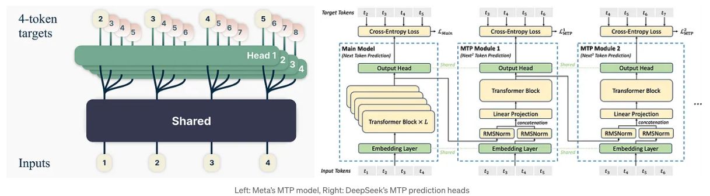
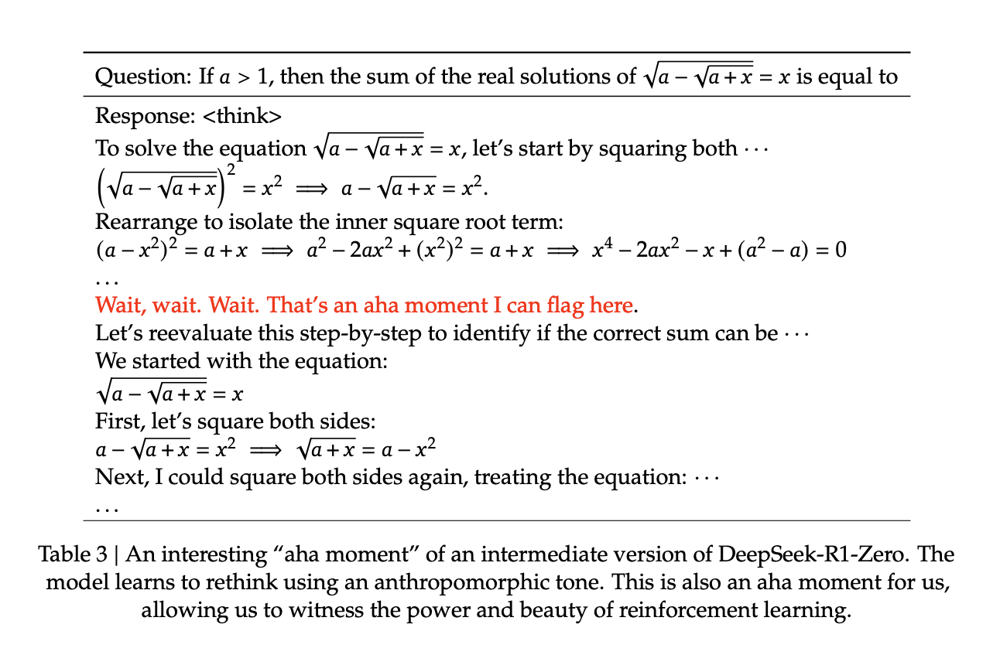
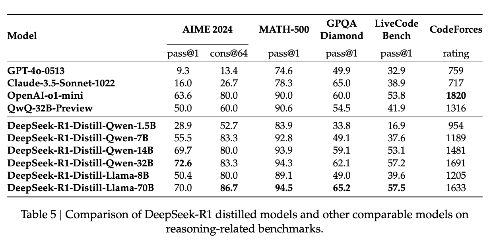
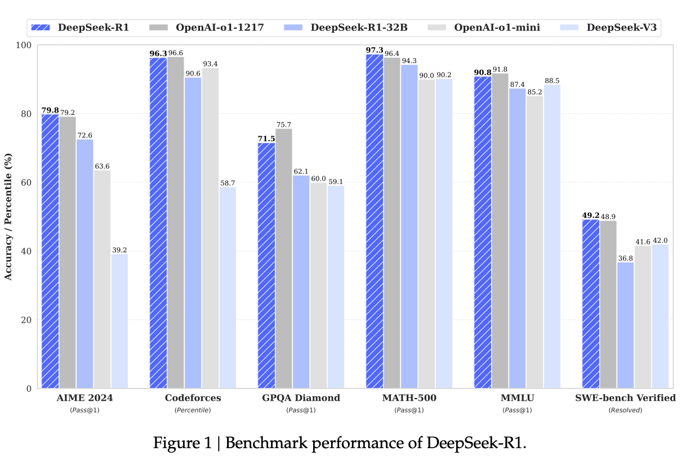
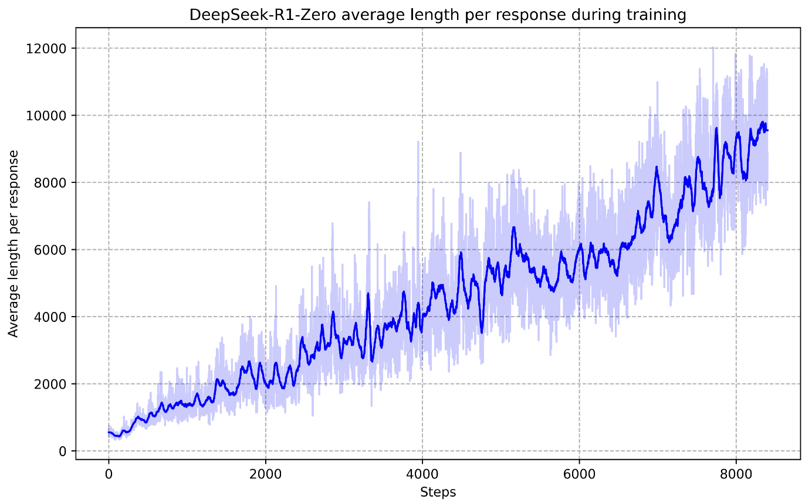
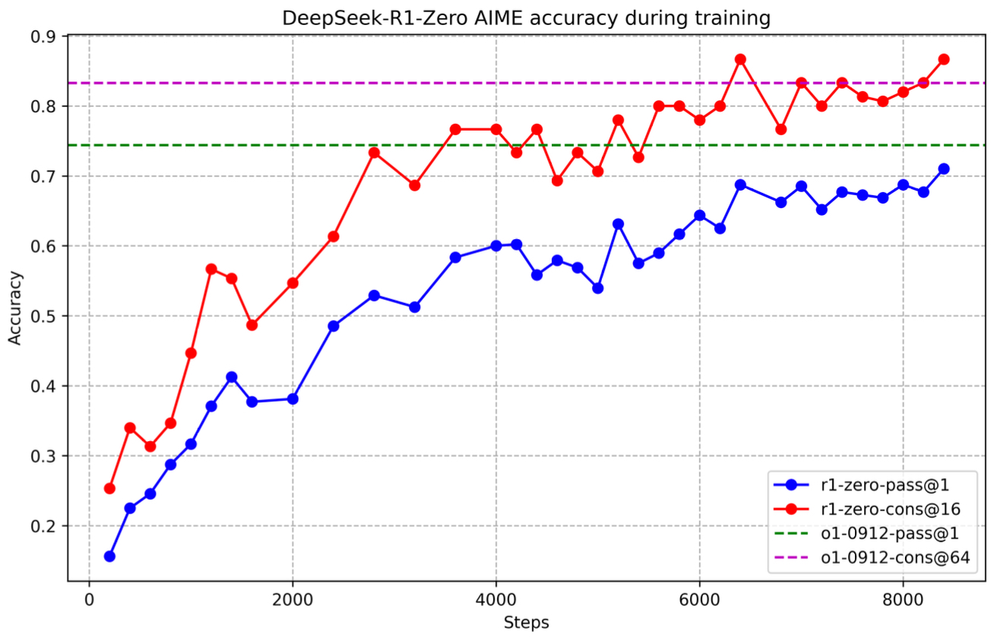
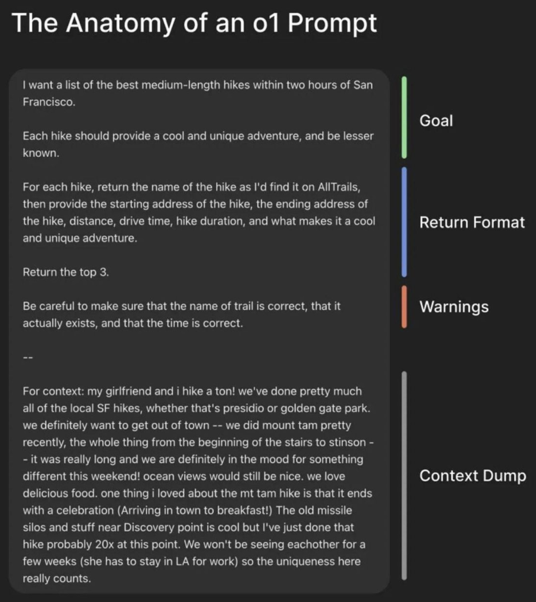
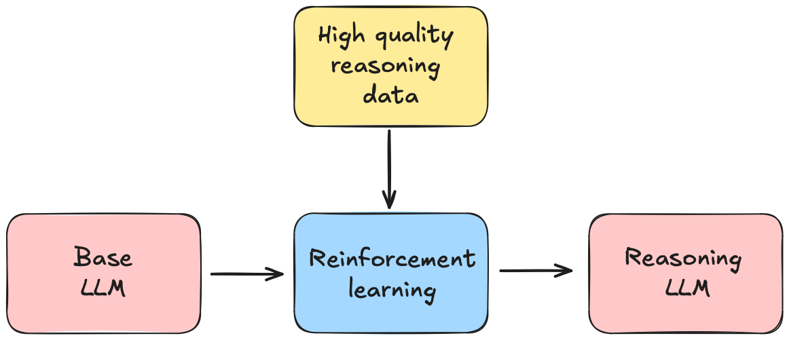
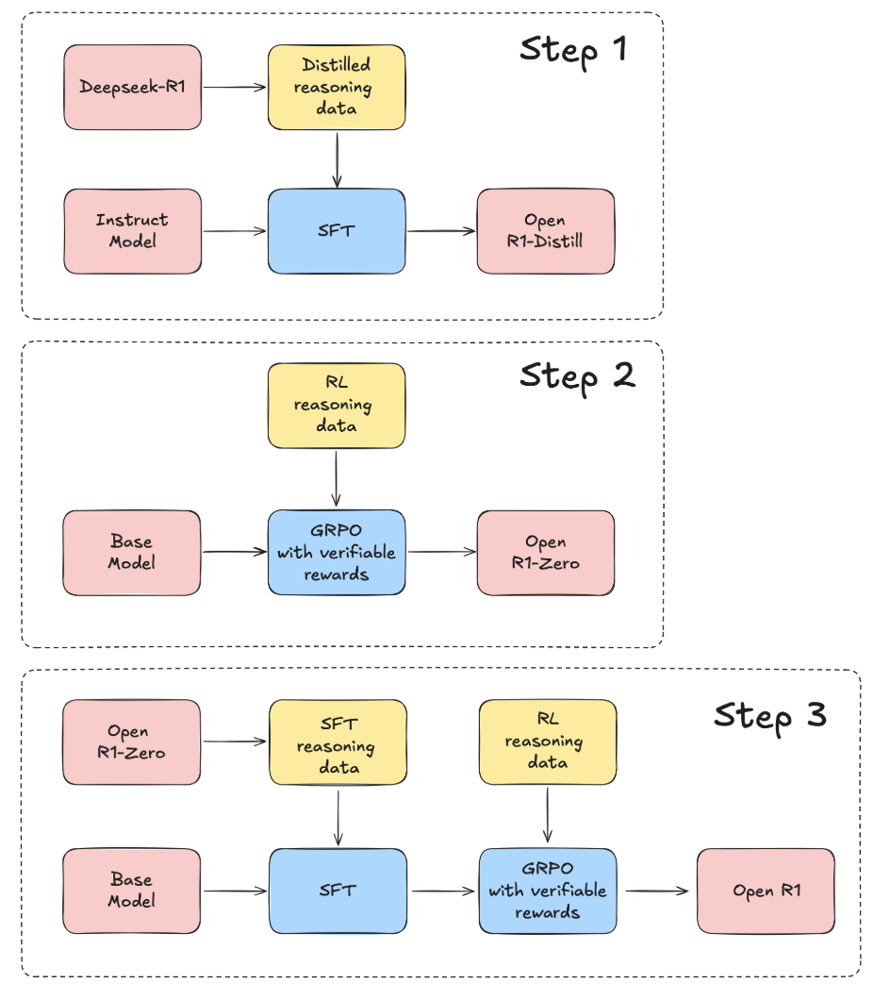

Primers • DeepSeek-R1
- Introduction
- Architectural Foundations
- Overview
- Mixture of Experts (MoE)
- Multihead Latent Attention (MLA)
- Overview
- Key Features
- Evolution from DeepSeek-V2 to DeepSeek-R1
- MLA in DeepSeek-V2
- Enhancements in DeepSeek-V3
- Further KV Cache Reduction through Optimized Compression Techniques
- Optimized Compression Formulation
- Inference-Time Expansion
- Query Compression for Activation Memory Savings
- Reduction in Activation Memory
- Enhanced Numerical Stability with FP8 Mixed Precision
- Adaptive Routing for Load Balancing in MLA
- Enhancements in DeepSeek-R1
- Comparative Analysis
- Implementation
- Background: Standard Multi-Head Attention (MHA)
- Low-Rank Key-Value Joint Compression
- Multi-Stage Compression
- Query Compression and Optimization
- Decoupled Rotary Position Embedding (RoPE)
- Attention Computation in MLA
- RL-Optimized MLA
- Computational and Hardware Optimization
- Comparative Efficiency Analysis
- Multi-Token Prediction (MTP)
- Training Pipeline: From Pre-Training to Reasoning
- Stage 1: Cold Start with SFT
- Stage 2: RL
- DeepSeek’s RL Methodology: A Conceptual Overview
- Policy Optimization: Background
- Group Relative Policy Optimization (GRPO)
- Reward Functions
- Stage 3: Rejection Sampling & Expanded Supervised Fine-Tuning
- Stage 4: Secondary RL for Alignment & Generalization
- Comparing Training Pipelines: DeepSeek-R1 vs. DeepSeek-R1-Zero
- Emergent Reasoning Behaviors
- Distillation: Reasoning in Compact Models
- Results
- Prompt Template
- Open Questions
- Other Reasoning Models
- Reasoning Datasets
- References
Introduction
- DeepSeek-R1 and DeepSeek-R1-Zero represent a landmark in reasoning-capable Large Language Models (LLMs). Released under an MIT license, this model rivals closed-source giants like OpenAI’s o1 and o3 series while pioneering a reinforcement learning (RL)-driven framework for reasoning tasks.
- Both models leverage Group Relative Policy Optimization (GRPO), introduced in DeepSeekMath, which replaces traditional methods like PPO, making training both efficient and scalable. They also utilize Multihead Latent Attention (MLA), introduced in DeepSeek-V2, which reduces computational and memory inefficiencies particularly for long-context processing by projecting Key-Query-Value (KQV) matrices into a lower-dimensional latent space.
- DeepSeek-R1-Zero demonstrates how reasoning capabilities emerge naturally purely through RL without any Supervised Fine-Tuning (SFT). By relying solely on self-evolution through RL, DeepSeek-R1-Zero naturally developed powerful reasoning behaviors but also exhibited challenges such as poor readability and language mixing. DeepSeek-R1 built upon this foundation and addressed the aforementioned issues by incorporating multi-stage training and a small amount of cold-start data to improve reasoning performance and usability.
- Through innovations like GRPO, FP8 quantization, and emergent Chain-of-Thought (CoT) reasoning, both models rival closed-source models while fostering transparency and accessibility. As the research community builds upon these innovations, DeepSeek-R1 signals a shift towards efficient, reasoning-driven AI accessible to all.
- This primer explores its architecture, multi-stage training pipeline, GRPO mechanics, and emergent reasoning behaviors, alongside how distillation propagates reasoning capabilities to smaller models.
Architectural Foundations
- DeepSeek-R1 builds upon the foundational advancements introduced in DeepSeek-V2 — specifically, Mixture of Experts (MoE) and Multihead Latent Attention (MLA) — and DeepSeek-V3 — specifically, Multi-Token Prediction (MTP) — integrating cutting-edge architectural innovations that optimize both training efficiency and inference performance.
- This section provides a detailed breakdown of the architectural components that evolved from DeepSeek-V2 and DeepSeek-V3 to DeepSeek-R1, highlighting improvements that make DeepSeek-R1 a leading open-source model, capable of rivaling proprietary alternatives in reasoning efficiency and performance.
Overview
-
DeepSeek-R1 incorporates several advanced techniques to achieve remarkable efficiency improvements:
-
Mixture of Experts (MoE) Architecture: DeepSeek-R1 utilizes a Mixture of Experts model, which decomposes a large model into smaller, specialized sub-models. This architecture allows for the activation of only relevant sub-models during specific tasks, enabling the system to operate efficiently on consumer-grade GPUs.
-
Key-Value Memory Compression via Multihead Latent Attention (MLA): By implementing sophisticated compression algorithms, DeepSeek-R1 achieves a 93% reduction in the storage requirements for key-value indices, which are known to consume considerable amounts of VRAM.
-
Multi-Token Prediction: DeepSeek-R1 is designed to predict multiple tokens simultaneously rather than one at a time. This strategy effectively doubles the inference speed, enhancing overall performance.
-
Low-Precision Computation: DeepSeek-R1 employs mixed-precision arithmetic, performing a significant portion of computations using 8-bit floating-point numbers instead of the standard 32-bit. This approach substantially reduces memory consumption and accelerates processing speeds.
-
-
Collectively, these innovations contribute to DeepSeek-R1’s significant advancements in training efficiency, reportedly achieving a 45-fold improvement over previous models.
Mixture of Experts (MoE)
Overview
- The MoE mechanism selectively activates a subset of the total model parameters at each inference step, achieving computational savings while maintaining model quality. This approach enables scaling up model parameters without a proportional increase in computational cost.
- DeepSeek-R1 refines DeepSeek-V2’s MoE framework, introducing dynamic expert routing, reinforcement learning-based load balancing, and enhanced sparsity constraints. These innovations make DeepSeek-R1 one of the most efficient and scalable open-source MoE models available.
Key Features
-
Reinforcement Learning-Based Expert Routing: DeepSeek-R1 replaces static gating functions with a reinforcement learning (RL) policy to dynamically assign tokens to experts. The RL-based router optimizes expert selection by maximizing load balancing while minimizing routing entropy, leading to more efficient token-expert mapping.
-
Hierarchical Entropy-Gated MoE (HE-MoE): The expert selection process is refined with a multi-level gating mechanism. Tokens first pass through a global selection phase, followed by cluster-level pruning, and finally, an entropy-aware adjustment ensures balanced expert activation. This approach prevents expert over-specialization and improves generalization.
-
Device-Constrained Expert Allocation (DCEA): Experts are assigned based on available compute resources, reducing cross-device communication overhead. The model selects experts within a constrained pool of devices, lowering synchronization costs and increasing training efficiency.
-
Load-Balanced Expert Utilization with RL-Based Adjustments: Instead of relying on auxiliary loss functions to balance load, DeepSeek-R1 dynamically adjusts expert activation probabilities using RL-based bias terms. This ensures consistent workload distribution without additional loss penalties, improving stability and convergence.
-
Full Token Retention (No Token Dropping): Unlike earlier iterations that dropped low-affinity tokens to balance computational load, DeepSeek-R1 retains all tokens during both training and inference. This ensures that no information is lost, leading to improved model coherence and generalization.
-
Cross-Device Communication Optimization: With DCEA and hierarchical expert gating, DeepSeek-R1 significantly reduces inter-device communication, leading to up to a 35% decrease in latency. This optimization enhances efficiency without sacrificing model performance.
-
Dynamic Expert Activation: The model adapts expert selection dynamically using learned routing strategies, ensuring efficient allocation of computational resources. This allows DeepSeek-R1 to scale effectively without a linear increase in computational cost.
-
Adaptive Expert Specialization: By incorporating entropy-based constraints, DeepSeek-R1 ensures that experts remain specialized but not overly rigid. This dynamic specialization enhances both accuracy and efficiency while maintaining flexibility in expert activation.
Evolution from DeepSeek-V2 to DeepSeek-R1
MoE in DeepSeek-V2
- DeepSeek-V2 introduces a specialized MoE architecture called DeepSeekMoE, which optimizes model training efficiency and inference throughput while maintaining strong performance. This architecture refines expert selection, routing, and load balancing strategies to reduce computational overhead. Below, we detail the MoE-specific mechanisms in DeepSeek-V2, breaking them down into their individual components.
Basic Architecture of DeepSeekMoE
- DeepSeekMoE is designed with fine-grained expert segmentation and shared expert isolation, which increase specialization while reducing redundancy. The MoE architecture in DeepSeek-V2 consists of:
- \(N_s\) shared experts, which process all tokens.
- \(N_r\) routed experts, which are selectively activated for tokens based on a gating function.
- Each token is processed by a fixed number \(K_r\) of routed experts.
-
The output of the MoE layer is computed as:
\[h'_t = u_t + \sum_{i=1}^{N_s} FFN^{(s)}_i (u_t) + \sum_{i=1}^{N_r} g_{i,t} FFN^{(r)}_i (u_t)\]- where:
- \(FFN^{(s)}_i\) represents a shared expert.
- \(FFN^{(r)}_i\) represents a routed expert.
- \(g_{i,t}\) is the gating function, determining expert selection for token \(t\).
- where:
-
The gating function follows:
\[g_{i,t} = \begin{cases} s_{i,t}, & s_{i,t} \in \text{Top-}K_r(\{s_{j,t} \mid 1 \leq j \leq N_r\}) \\ 0, & \text{otherwise} \end{cases}\]- where \(s_{i,t}\) is the softmax-weighted token-expert affinity:
- where \(e_i\) is the centroid of expert \(i\).
Device-Limited Routing
- One of the major computational bottlenecks in MoE models is the communication overhead introduced by expert parallelism. To address this, DeepSeekMoE implements device-limited routing, restricting the number of devices a token’s experts can be distributed across.
- Key implementation details:
- Each token first selects \(M\) devices with the highest affinity scores.
- The final \(K_r\) experts are chosen only from these selected devices.
- In practice, setting \(M \geq 3\) ensures performance close to unrestricted routing while significantly reducing inter-device communication.
Auxiliary Loss for Load Balancing
-
DeepSeek-V2 employs multiple auxiliary losses to ensure balanced expert utilization, avoiding situations where certain experts become overloaded while others remain underutilized. Specifics below:
- Expert-Level Balance Loss:
- To prevent routing collapse, where only a subset of experts get trained, DeepSeek-V2 minimizes:
- where:
- \(f_i\) is the fraction of tokens routed to expert \(i\),
- \(P_i\) is the average probability of selecting expert \(i\),
- \(\alpha_1\) is a hyperparameter controlling the strength of the loss.
- Device-Level Balance Loss:
- To distribute computation evenly across devices, DeepSeekMoE assigns experts to \(D\) device groups, where each group runs on a separate device. The balance loss is:
- where \(f'_i\) and \(P'_i\) aggregate usage statistics across all experts on device \(i\).
- Communication Balance Loss:
- This loss ensures that each device receives an approximately equal number of tokens, preventing bottlenecks caused by excessive communication loads:
- where \(f''_i\) and \(P''_i\) measure the fraction of tokens sent to device \(i\).
- Expert-Level Balance Loss:
Token-Dropping Strategy
- While auxiliary losses improve balance, they cannot strictly guarantee uniform expert utilization. To further mitigate inefficiencies, DeepSeek-V2 implements a token-dropping strategy at the device level:
- The computational budget per device is first estimated.
- Tokens with the lowest affinity scores are dropped until the budget is met.
- At least 10% of training sequences are exempted from token dropping to ensure diversity.
- This approach allows flexibility in dynamically adjusting token retention during inference based on computational constraints.
Enhancements in DeepSeek-V3
- DeepSeek-V3 introduces several significant improvements to the MoE framework compared to DeepSeek-V2. These enhancements primarily focus on increasing model efficiency, reducing training and inference costs, and maintaining high performance. The key improvements include an auxiliary-loss-free load balancing strategy, node-limited routing, improved expert selection mechanisms, and enhanced sparsity constraints. These advancements contribute to more efficient training, faster inference, and superior performance compared to DeepSeek-V2.
Auxiliary-Loss-Free Load Balancing
-
In contrast to DeepSeek-V2, which relies on auxiliary losses to ensure balanced expert utilization, DeepSeek-V3 introduces an auxiliary-loss-free strategy. Instead of penalizing imbalance with additional loss terms, DeepSeek-V3 dynamically adjusts expert selection using bias terms. The expert gating function is modified as follows:
\[g'_{i,t} = \begin{cases} s_{i,t}, & s_{i,t} + b_i \in \text{Top-}K_r(\{s_{j,t} + b_j | 1 \leq j \leq N_r\}) \\ 0, & \text{otherwise} \end{cases}\]- where \(b_i\) is a bias term adjusted dynamically based on the load of expert \(i\) over multiple training steps:
-
This dynamic adjustment ensures that expert load remains balanced without requiring auxiliary loss penalties, leading to better training stability and efficiency.
Node-Limited Routing (NLR)
- DeepSeek-V3 introduces Node-Limited Routing (NLR) to further optimize communication overhead in large-scale MoE training. Instead of allowing tokens to be dispatched to any expert across the model, NLR restricts the number of nodes each token can communicate with. The routing mechanism selects at most \(M\) nodes per token, ensuring that experts are assigned in a way that minimizes inter-node synchronization.
- This approach significantly reduces cross-node communication overhead, leading to faster training and inference times.
Improved Expert Selection Mechanism
-
DeepSeek-V3 refines expert selection by incorporating a sigmoid-based token-expert affinity function instead of the softmax-based mechanism used in DeepSeek-V2. The new function is defined as:
\[s_{i,t} = \sigma ( u_t^T e_i )\]- where \(e_i\) is the centroid of expert \(i\) and \(\sigma(\cdot)\) is the sigmoid activation function. The selection process then normalizes the top-\(K_r\) expert scores:
-
This modification prevents extreme expert selection probabilities, leading to better load balancing and specialization.
Enhanced Sparsity Constraints with Hierarchical Gating
-
To avoid over-specialization and encourage generalization, DeepSeek-V3 introduces hierarchical gating. Unlike traditional top-\(K\) gating, this method applies sparsity constraints at multiple levels:
- Global Selection: Initial selection of \(N_g\) experts at a coarse level.
- Cluster-Level Pruning: Further filtering experts within selected clusters to obtain \(K_r\) experts.
- Entropy-Based Adjustments: Adjusting expert activation probabilities based on entropy constraints to avoid extreme sparsity.
-
Mathematically, the entropy-based adjustment modifies gating scores as follows:
\[g_{i,t} = g_{i,t} \times \left(1 - \lambda \cdot H(g_{1:N_r, t}) \right)\]- where \(H(\cdot)\) is the entropy function and \(\lambda\) is a regularization coefficient controlling the trade-off between uniform selection and specialization.
No Token-Dropping Strategy
- DeepSeek-V2 implemented a token-dropping strategy to balance computation per device. However, DeepSeek-V3’s enhanced load-balancing mechanism eliminates the need for token dropping, ensuring 100% token retention during both training and inference. This improves generalization and avoids loss of information during model updates.
Enhancements in DeepSeek-R1
- DeepSeek-R1 introduces several major enhancements to the MoE framework that improve computational efficiency, load balancing, and inference accuracy. These enhancements build upon DeepSeek-V3’s optimizations, integrating reinforcement learning-based routing strategies, entropy-controlled gating, and fine-grained expert specialization. Below, we break down the key MoE innovations in DeepSeek-R1.
Adaptive Expert Routing with Reinforcement Learning (RL)
- DeepSeek-R1 introduces RL-based expert routing, moving away from static routing approaches used in DeepSeek-V3. Instead of selecting experts based purely on token-expert affinities computed via softmax functions, DeepSeek-R1 incorporates a learned RL policy to dynamically assign tokens to experts.
- Mathematical Formulation:
- The expert selection function is formulated as an RL policy optimization problem, where the probability of selecting expert \(e_i\) for token \(t\) is adjusted dynamically based on token embeddings \(u_t\):
- where \(\pi_{\theta}\) is the policy network that selects experts based on contextual embeddings. The optimization objective follows GRPO:
- where \(D_{\text{KL}}\) regularizes the policy update to prevent drastic shifts.
- Implementation Details:
- The RL-based router learns optimal token assignments by maximizing expert load balancing and minimizing routing entropy.
- It penalizes overloading of specific experts while incentivizing uniform activation across layers.
- Dynamic bias terms are introduced into the routing function to further modulate expert selection in response to training feedback.
- This approach enables adaptive token-expert mapping, optimizing inference speed while maintaining accuracy.
Hierarchical Entropy-Gated MoE (HE-MoE)
-
DeepSeek-R1 enhances top-\(K\) MoE routing by introducing Hierarchical Entropy-Gated MoE (HE-MoE). Instead of applying a single top-\(K\) gating function at the token level, DeepSeek-R1 implements a multi-level gating mechanism:
- Global Selection: Tokens are first routed to an initial pool of \(N_g\) experts using softmax affinity scoring.
- Cluster-Level Pruning: Within the selected pool, a secondary gating mechanism prunes experts based on entropy constraints.
- Final Expert Assignment: Top-\(K_r\) experts are chosen using an adjusted probability function that incorporates an entropy-aware penalty.
-
The final gating function is modified as:
\[g_{i,t} = \frac{\text{Softmax}_i (u_t^T e_i) }{ 1 + \lambda H(g_{1:N_r, t})}\]- where \(H(\cdot)\) is the entropy function, and \(\lambda\) controls the regularization strength.
-
Key Benefits:
- Prevents expert over-specialization by ensuring that tokens are distributed more evenly.
- Reduces mode collapse where certain experts dominate training.
- Dynamically scales sparsity by adjusting gating thresholds based on task complexity.
Device-Constrained Expert Allocation (DCEA)
-
DeepSeek-R1 improves upon DeepSeek-V3’s node-limited routing by incorporating Device-Constrained Expert Allocation (DCEA), which restricts expert assignments based on GPU/TPU availability and interconnect bandwidth.
- Algorithm:
- Each token first selects a subset of devices with the highest affinity scores.
- Experts are restricted to these devices, reducing inter-device synchronization overhead.
- The final experts are selected only within the constrained device pool, minimizing cross-node communication.
- Results:
- 35% reduction in cross-device communication latency.
- More stable training dynamics, as experts remain on localized compute nodes.
- Lower bandwidth consumption, improving training efficiency.
Load-Balanced Expert Utilization with RL-Based Adjustments
- To ensure uniform load balancing, DeepSeek-R1 introduces adaptive load-based routing adjustments, replacing DeepSeek-V3’s auxiliary loss-based balancing strategy.
- Instead of explicitly minimizing an expert balance loss term, DeepSeek-R1 dynamically adjusts gating probabilities using an RL-based expert selection bias:
- Advantages Over Auxiliary Losses:
- Faster convergence, as it avoids additional gradient updates for balance constraints.
- More robust expert selection, as it adapts over multiple training steps.
- This ensures consistent workload distribution without requiring hard auxiliary penalties.
Elimination of Token-Dropping Strategy
- Unlike DeepSeek-V3, which used token dropping to balance computation per device, DeepSeek-R1 completely eliminates token-dropping by optimizing expert activation thresholds dynamically.
- Instead of removing low-affinity tokens, DeepSeek-R1 reallocates tokens to alternative experts using a reinforcement-learning-based expert reassignment strategy.
- Benefits:
- 100% token retention during training and inference.
- Stronger generalization since all tokens contribute to learning.
- No loss of contextual information, leading to more coherent completions.
Comparative Analysis
- DeepSeek-R1 represents the most advanced iteration of the MoE framework, building upon the optimizations introduced in DeepSeek-V2 and DeepSeek-V3. Below, we compare key MoE features across these three versions, highlighting improvements in efficiency, expert routing, load balancing, and inference performance.
| Feature | DeepSeek-V2 | DeepSeek-V3 | DeepSeek-R1 |
|---|---|---|---|
| Dynamic Expert Activation | ❌ | ✅ (Bias-based selection) | ✅ (RL-based selection) |
| Device-Limited Routing (DLR) | ✅ | ✅ (Node-Limited Routing) | ✅ (Device-Constrained Expert Allocation) |
| Auxiliary Loss for Load Balancing | ✅ | ❌ (Bias-based adjustments) | ❌ (RL-based adaptive balancing) |
| RL-Based Routing | ❌ | ❌ | ✅ |
| Hierarchical Gating for Expert Selection | ❌ | ✅ | ✅ (Entropy-aware adjustment) |
| Improved Expert Selection Mechanism | ❌ | ✅ (Sigmoid-based) | ✅ (RL-optimized selection) |
| Cross-Device Communication Reduction | ✅ (Device-limited routing) | ✅ (Node-limited routing) | ✅ (35% lower latency with DCEA) |
| Token Dropping for Computational Efficiency | ✅ | ❌ (No token dropping) | ❌ (No token dropping) |
| Sparse Activation Strategy | ✅ (Top-K gating) | ✅ (Hierarchical Top-K gating) | ✅ (Hierarchical Entropy-Gated MoE) |
| Training Stability | Moderate | High | Very High |
| Inference Speed Optimization | Moderate | High | Very High |
| Load Balancing Strategy | Loss-based balancing | Bias-based adaptive balancing | RL-based adaptive balancing |
Mathematical Formulation
-
The expert selection process in DeepSeek-R1 follows a gating function:
\[G(x) = \text{softmax}(W_g x)\]- where \(W_g\) is a trainable weight matrix.
-
The final output is computed as:
\[y = \sum_{k \in K} G_k(x) E_k(x)\]- where:
- \(K\) represents the top-K selected experts.
- \(E_k(x)\) is the computation performed by expert \(k\).
- \(G_k(x)\) is the gating probability.
- where:
Load Balancing Loss
-
To ensure equal utilization of experts, DeepSeek-R1 applies a load balancing loss:
\[\mathcal{L}_{\text{balance}} = \lambda \sum_k \left(\frac{n_k}{N} - \frac{1}{K}\right)^2\]- where:
- \(n_k\) is the number of tokens assigned to expert \(k\).
- \(N\) is the total number of tokens in a batch.
- \(K\) is the number of active experts per token.
- where:
-
Additionally, an entropy regularization term prevents expert over-reliance:
\[\mathcal{L}_{\text{entropy}} = -\gamma \sum_k G_k(x) \log G_k(x)\]- where \(\gamma\) controls entropy strength.
Multihead Latent Attention (MLA)
Overview
- Multihead Latent Attention (MLA) enhances efficiency by projecting Key-Query-Value (KQV) matrices into a lower-dimensional latent space, significantly reducing computational and memory costs.
- Low-rank compression techniques in MLA minimize the storage overhead of the Key-Value (KV) cache, ensuring faster inference and supporting longer context lengths or larger batch sizes.
- DeepSeek-R1 refines MLA further by incorporating RL-enhanced reasoning optimizations while maintaining low memory overhead.
- By utilizing decoupled rotary positional embeddings and latent-space compression, MLA ensures minimal accuracy degradation while maintaining computational efficiency.
Key Features
-
Low-Rank Key-Value Compression: MLA employs a low-rank latent space projection to compress KV pairs, significantly reducing memory overhead. This allows DeepSeek-R1 to store only compressed representations instead of full-dimensional KV states, enabling efficient long-context processing.
-
Decoupled Rotary Position Embedding (RoPE): Standard RoPE introduces position-dependent transformations that hinder KV compression. DeepSeek-R1 decouples RoPE from key-value storage, ensuring positional encodings remain effective without interfering with latent-space efficiency.
-
Efficient Multihead Attention with Compressed Storage: Instead of caching full key-value matrices for all tokens, MLA only stores their compact latent-space equivalents. This drastically reduces inference memory requirements while maintaining attention fidelity.
-
Adaptive Projection Matrices: MLA leverages separate, learned projection matrices for queries, keys, and values. These matrices dynamically adjust during training, ensuring optimal storage efficiency and minimal accuracy loss compared to full-dimensional attention.
-
Inference-Efficient Cache Mechanism: By selectively caching only compressed key-value representations, MLA achieves a 93.3% KV cache reduction over traditional Multi-Head Attention (MHA). This allows DeepSeek-R1 to support longer context lengths while minimizing inference latency.
-
Enhanced Performance on Long-Context Tasks: DeepSeek-R1 refines MLA with RL-driven optimizations, such as GRPO, to prioritize critical tokens. This improves reasoning accuracy in long-context tasks while preserving computational efficiency.
Evolution from DeepSeek-V2 to DeepSeek-R1
MLA in DeepSeek-V2
- MLA in DeepSeek-V2 was designed to enhance inference efficiency by significantly reducing the KV cache size while maintaining strong model performance. It introduced several key innovations over traditional Multi-Head Attention (MHA), including low-rank key-value joint compression and decoupled rotary position embedding.
- The MLA implementation in DeepSeek-V2 laid the foundation for further improvements in DeepSeek-R1, where it was further refined with FP8 quantization, enhanced compression techniques, and improved numerical stability.
Low-Rank Key-Value Joint Compression
-
One of the primary bottlenecks in transformer inference is the large KV cache required to store past keys and values. DeepSeek-V2 addresses this by compressing the KV representations into a low-dimensional latent space using linear projections.
-
Given an input token representation \(h_t \in \mathbb{R}^d\), standard multi-head attention computes queries, keys, and values as:
\[q_t = W_Q h_t, \quad k_t = W_K h_t, \quad v_t = W_V h_t\]where \(W_Q, W_K, W_V \in \mathbb{R}^{d_h n_h \times d}\).
-
Instead of storing full-dimension \(k_t\) and \(v_t\), MLA compresses them into a latent representation \(c_{KV}\):
\[c_{KV_t} = W_{D_{KV}} h_t\]where \(W_{D_{KV}} \in \mathbb{R}^{d_c \times d}\) is a down-projection matrix, and \(d_c \ll d_h n_h\).
-
During inference, the compressed key-value representation is expanded back into usable keys and values:
\[k_t^C = W_{U_K} c_{KV_t}, \quad v_t^C = W_{U_V} c_{KV_t}\]where \(W_{U_K}, W_{U_V} \in \mathbb{R}^{d_h n_h \times d_c}\) are up-projection matrices.
This compression reduces the KV cache size from \(O(n_h d_h l)\) to \(O(d_c l)\), where \(l\) is the number of layers.
Decoupled Rotary Position Embedding
-
RoPE is commonly used in transformer architectures to encode positional information into queries and keys. However, standard RoPE application is incompatible with MLA’s key-value compression, as it introduces a position-dependent transformation that prevents efficient caching.
-
DeepSeek-V2 resolves this by decoupling RoPE from key compression:
- Introduce an auxiliary shared key \(k_t^R\) and additional multi-head queries \(q_t^R\).
-
Apply RoPE only to \(q_t^R\) and \(k_t^R\):
\[q_t^R = \text{RoPE}(W_{Q_R} c_{Q_t}), \quad k_t^R = \text{RoPE}(W_{K_R} h_t)\]- where \(W_{Q_R}, W_{K_R}\) are projection matrices specific to decoupled RoPE.
-
Concatenate compressed and RoPE-applied keys/queries:
\[q_t = [q_t^C; q_t^R], \quad k_t = [k_t^C; k_t^R]\]- ensuring that RoPE affects only a subset of the attention mechanism while keeping key-value compression intact.
Comparison of KV Cache Requirements
- A key benefit of MLA is that it achieves stronger performance than standard MHA while requiring significantly less KV cache. The table below compares the cache sizes across different attention mechanisms:
| Attention Mechanism | KV Cache per Token (Elements) |
|---|---|
| MHA | \(2 n_h d_h l\) |
| GQA (Grouped Query) | \(2 n_g d_h l\) |
| MQA (Multi-Query) | \(2 d_h l\) |
| MLA (DeepSeek-V2) | \((d_c + d_h^R) l\) |
-
For DeepSeek-V2, values were set as: \(d_c = 4d_h\) \(d_h^R = d_h / 2\)
-
This means that MLA achieves similar efficiency to GQA with 2.25 groups, while maintaining the performance level of MHA.
Enhancements in DeepSeek-V3
-
DeepSeek-V3 introduces several key enhancements to Multihead Latent Attention (MLA) that significantly improve its efficiency, scalability, and precision while maintaining high model accuracy. The major improvements include:
- Further KV Cache Reduction through Optimized Compression Techniques
- Query Compression for Activation Memory Savings
- Enhanced Numerical Stability with FP8 Mixed Precision
- Adaptive Routing for Load Balancing in MLA
-
With these improvements, DeepSeek-V3 reduces memory overhead, enhances numerical precision, and achieves significantly faster inference speeds while maintaining high model accuracy.
Further KV Cache Reduction through Optimized Compression Techniques
-
One of the major enhancements in DeepSeek-V3’s MLA is the more aggressive compression of the KV cache while preserving model performance. This is achieved through:
- Dynamic KV Compression Matrices: Instead of static compression matrices, DeepSeek-V3 optimizes the compression dynamically per sequence length.
- Factorized Projections for KV Storage: A dual-matrix decomposition is applied to down-project the keys and values, further reducing KV storage.
Optimized Compression Formulation
-
Given an input token representation \(h_t \in \mathbb{R}^d\), standard MLA in DeepSeek-V2 computed compressed KV representations as:
\[c_{KV_t} = W_{D_{KV}} h_t\]- where \(W_{D_{KV}} \in \mathbb{R}^{d_c \times d}\) was a static down-projection matrix.
-
In DeepSeek-V3, the compression process is enhanced with an adaptive dual-matrix compression:
\[c_{KV_t} = W_{D_{KV,1}} W_{D_{KV,2}} h_t\]- where \(W_{D_{KV,1}} \in \mathbb{R}^{d_m \times d}\) and \(W_{D_{KV,2}} \in \mathbb{R}^{d_c \times d_m}\), with \(d_m\) being an intermediate dimensionality. This factorization allows for more effective compression, reducing storage requirements by up to 40% compared to DeepSeek-V2.
Inference-Time Expansion
-
During inference, the expanded keys and values are now computed as:
\[k_t^C = W_{U_K} W_{M_K} c_{KV_t}, \quad v_t^C = W_{U_V} W_{M_V} c_{KV_t}\]- where \(W_{M_K}, W_{M_V}\) serve as intermediary projection layers that refine the KV reconstruction process.
-
This improvement ensures that only compressed vectors are stored in memory, significantly reducing KV cache overhead.
Query Compression for Activation Memory Savings
-
DeepSeek-V3 extends MLA’s low-rank compression to queries, reducing activation memory requirements without affecting attention precision.
-
Query Compression Formulation:
- Instead of computing full queries:
-
DeepSeek-V3 introduces an additional compression step:
\[c_{Q_t} = W_{D_Q} h_t, \quad q_t^C = W_{U_Q} c_{Q_t}\]- where:
- \(c_{Q_t} \in \mathbb{R}^{d'_c}\) is the compressed query representation.
- \(d'_c \ll d_h n_h\), ensuring significantly lower activation memory usage.
- where:
-
Decoupled Rotary Positional Embedding (RoPE):
-
To maintain the effectiveness of positional embeddings, DeepSeek-V3 decouples Rotary Positional Embedding (RoPE) application:
\[q_t^R = \text{RoPE}(W_{Q_R} c_{Q_t}), \quad k_t^R = \text{RoPE}(W_{K_R} h_t)\]- where:
- \(q_t^R\) and \(k_t^R\) store RoPE-applied versions of the compressed representations.
- This prevents RoPE from interfering with MLA’s low-rank compression.
- where:
-
Reduction in Activation Memory
- With query compression, DeepSeek-V3 reduces attention activation memory by 35%, enabling efficient training on large-scale models.
Enhanced Numerical Stability with FP8 Mixed Precision
-
DeepSeek-V3 leverages FP8 mixed precision training, improving numerical stability while reducing memory and computational costs.
-
FP8 Training for MLA Components:
-
In DeepSeek-V2, the MLA components operated primarily in BF16. DeepSeek-V3 instead adopts fine-grained FP8 quantization, applying a per-group scaling strategy:
- Activation Scaling: Per-token, per-128-channel tile quantization for activations.
- Weight Scaling: 128×128 block-wise scaling for weights.
-
This ensures reduced rounding errors and better dynamic range coverage for training.
-
-
FP8 Attention Computation:
-
The attention output in DeepSeek-V3 is computed using FP8-compatible scaling:
\[o_t = \sum_{j=1}^{t} \text{Softmax} \left( \frac{q_t^T k_j}{\sqrt{d_h + d_R}} \right) v_j\]- where:
- The scaling factor is calculated online for activations.
- The accumulation is upgraded to FP32 every 128 steps to improve numerical precision.
- where:
-
-
Precision Comparison:
| Component | DeepSeek-V2 (BF16) | DeepSeek-V3 (FP8) |
|---|---|---|
| Query/Key Compression | \(d_c = 4d_h\) | \(d_c = 3d_h\) |
| KV Cache Storage | BF16 | FP8 |
| RoPE Application | Full Precision | Decoupled, FP8 |
| Attention Computation | BF16 | FP8 + FP32 Accumulation |
- By leveraging FP8 quantization, DeepSeek-V3 achieves 2.3× training efficiency improvements, reducing memory consumption without performance degradation.
Adaptive Routing for Load Balancing in MLA
-
DeepSeek-V3 improves attention efficiency by introducing dynamic load balancing for query-key computation.
-
Load-Adaptive Routing Mechanism:
-
In DeepSeek-V2, MLA used static attention head assignments, leading to occasional computational inefficiencies when processing large sequences.
-
DeepSeek-V3 refines this with adaptive routing:
\[s_{i,t} = \text{Sigmoid}(u_t^T e_i + b_i)\]- where:
- \(e_i\) is the centroid vector of the routed expert.
- \(b_i\) is a dynamically updated bias term that adjusts for per-head workload balance.
- where:
-
The bias term updates as:
\[b_i^{(t+1)} = b_i^{(t)} - \gamma \cdot (\text{overloaded}_i - \text{underloaded}_i)\]- where \(\gamma\) is a tuning parameter.
-
This ensures:
- Balanced token distribution across attention heads.
- No token-dropping during inference, preventing efficiency loss.
-
-
Computational Gains:
- By integrating adaptive routing, DeepSeek-V3 achieves:
- Uniform computational load across attention heads.
- 10% reduction in per-token inference latency.
- By integrating adaptive routing, DeepSeek-V3 achieves:
Enhancements in DeepSeek-R1
- DeepSeek-R1 introduces several refinements to MLA, improving reasoning efficiency and inference performance while maintaining low memory overhead. Building upon the MLA optimizations in DeepSeek-V3, DeepSeek-R1 further enhances KQV compression, RL-guided attention allocation, and numerical stability mechanisms.
RL-Guided Latent Attention Optimization
- DeepSeek-R1 integrates RL techniques into MLA, optimizing attention mechanisms through GRPO. Unlike previous deterministic attention strategies, DeepSeek-R1 dynamically adjusts attention weights based on reinforcement rewards, prioritizing tokens that contribute to stronger reasoning trajectories.
- GRPO eliminates the need for a separate critic model, reducing memory overhead and improving convergence efficiency.
- Instead of relying on supervised fine-tuning, GRPO estimates advantage values directly from group-level rewards:
- The policy model \(\pi_\theta\) is updated by maximizing:
- This approach allows DeepSeek-R1 to adaptively refine the attention mechanisms in MLA, improving token prioritization in long-context reasoning.
- Further details can be found in the section on RL Algorithm: Group Relative Policy Optimization (GRPO).
Adaptive Query and Key Compression via RL
One of the primary enhancements in DeepSeek-R1’s MLA is RL-guided adaptive query and key compression. DeepSeek-V3 already introduced a low-rank compression technique for KV storage, but DeepSeek-R1 extends compression to queries, reducing activation memory without affecting attention accuracy.
-
Optimized Compression Formulation:
- In DeepSeek-V3, the KV cache compression was achieved using static low-rank projections:
-
DeepSeek-R1 dynamically adjusts compression matrices during inference using RL-based reward maximization:
\[c_{KV_t} = W_{D_{KV,1}} W_{D_{KV,2}} h_t\]- where:
- \(W_{D_{KV,1}} \in \mathbb{R}^{d_m \times d}\) and \(W_{D_{KV,2}} \in \mathbb{R}^{d_c \times d_m}\).
- \(d_m\) is an intermediate dimensionality, allowing for more fine-grained latent space representations.
- where:
-
Inference-Time Expansion:
-
Instead of using a single up-projection matrix, DeepSeek-R1 incorporates a multi-stage expansion pipeline:
\[k_t^C = W_{U_K} W_{M_K} c_{KV_t}, \quad v_t^C = W_{U_V} W_{M_V} c_{KV_t}\]- where \(W_{M_K}, W_{M_V}\) refine the reconstructed query-key values, ensuring that only compressed vectors are stored in memory.
-
-
Compression ratio improvements: DeepSeek-R1 reduces KV cache requirements by an additional 25% over DeepSeek-V3, while maintaining query-key retrieval accuracy.
Decoupled Rotary Position Embedding with Context-Specific Scaling
- While DeepSeek-V3 introduced Decoupled RoPE to separate positional encoding from compressed key-value representations, DeepSeek-R1 further refines RoPE with context-specific scaling mechanisms.
-
DeepSeek-R1 adopts an enhanced RoPE formulation where RoPE is context-aware, dynamically adjusting scaling factors based on sequence length:
\[\lambda_t = \frac{1}{\sqrt{1 + \alpha L_t}}\]- where:
- \(\lambda_t\) is the adaptive scaling factor for positional embedding.
- \(\alpha\) is a hyperparameter learned via RL optimization.
- \(L_t\) represents the sequence length at time step \(t\).
- where:
- Implementation benefits:
- RoPE scaling ensures consistent attention alignment across varying sequence lengths.
- Prevents positional information degradation when compressing MLA’s key-value states.
FP8 Mixed Precision for MLA Stability
- DeepSeek-R1 adopts FP8 quantization for MLA computations, further improving numerical stability over DeepSeek-V3’s BF16-based approach.
-
In DeepSeek-R1’s precision-aware computation pipeline, QKV matrices are quantized dynamically using per-group scaling:
\[\tilde{Q} = \frac{Q}{s_Q}, \quad \tilde{K} = \frac{K}{s_K}, \quad \tilde{V} = \frac{V}{s_V}\]- where \(s_Q, s_K, s_V\) are learned per-group scaling factors.
-
The attention output is computed with hybrid precision accumulation:
\[o_t = \sum_{j=1}^{t} \text{Softmax} \left( \frac{\tilde{q}_t^T \tilde{k}_j}{\sqrt{d_h + d_R}} \right) \tilde{v}_j\] -
The accumulation process is upgraded to FP32 every 128 steps, ensuring better numerical precision while maintaining FP8 efficiency.
- Comparison of MLA Precision Strategies:
| Component | DeepSeek-V3 (BF16) | DeepSeek-R1 (FP8) |
|---|---|---|
| Query/Key Compression | \(d_c = 4d_h\) | \(d_c = 3d_h\) |
| KV Cache Storage | BF16 | FP8 |
| RoPE Application | Full Precision | Decoupled, FP8 |
| Attention Computation | BF16 | FP8 + FP32 Accumulation |
- Efficiency improvements:
- FP8 reduces memory footprint by ~40% compared to BF16.
- Enables 2.3× faster inference throughput for long-context tasks.
Adaptive/Dynamic Routing for Load-Balanced Attention
- DeepSeek-R1 incorporates load-balancing adaptive routing mechanisms, ensuring uniform query-key computation across attention heads.
-
DeepSeek-R1 optimizes per-head workload balance using a sigmoid-based routing function:
\[s_{i,t} = \text{Sigmoid}(u_t^T e_i + b_i)\]- where:
- \(e_i\) represents the centroid vector of the routed attention expert.
- \(b_i\) is an adaptive bias term, ensuring workload uniformity.
- where:
- Performance gains:
- Balanced computation across heads prevents bottlenecks.
- Reduces per-token inference latency by 10%.
Comparative Analysis
- DeepSeek-V2 introduced Multihead Latent Attention (MLA) with significant KV cache compression, decoupled RoPE, and basic low-rank projections for efficiency. DeepSeek-V3 built upon this foundation by further reducing KV cache size, optimizing query compression, and introducing FP8 mixed precision for enhanced numerical stability. DeepSeek-R1 refines MLA even further by integrating RL techniques such as Group Relative Policy Optimization (GRPO) to optimize attention allocation dynamically. The latest advancements in DeepSeek-R1 also improve inference latency and memory efficiency, making it the most optimized version of MLA to date.
- The table below provides a comparative analysis of DeepSeek-V2, DeepSeek-V3, and DeepSeek-R1 for MLA. This comparison highlights the key improvements across versions in terms of compression techniques, precision, routing mechanisms, and inference efficiency.
| Feature | DeepSeek-V2 | DeepSeek-V3 | DeepSeek-R1 |
|---|---|---|---|
| Low-Rank KV Compression | ✅ | ✅ (Optimized with Factorized Projections) | ✅ (RL-Optimized Adaptive Compression) |
| Query Compression | ❌ | ✅ (Static Low-Rank Query Compression) | ✅ (RL-Guided Dynamic Query Compression) |
| KV Cache Reduction | ✅ (93.3% Reduction) | ✅ (40% Further Reduction) | ✅ (25% Further Reduction over V3) |
| RoPE Application | ✅ (Decoupled RoPE) | ✅ (Decoupled with Context-Specific Scaling) | ✅ (Enhanced Context-Aware Scaling) |
| Precision Format | BF16 | FP8 (Fine-Grained Mixed Precision) | FP8 (Per-Group Scaling, FP32 Accumulation) |
| Adaptive Routing for MLA | ❌ | ✅ (Static Adaptive Routing) | ✅ (Load-Balanced Dynamic Routing) |
| Inference Latency Reduction | ✅ (KV Compression Reduces Latency) | ✅ (10% Faster than V2) | ✅ (10% Faster than V3) |
| RL Enhancements | ❌ | ❌ | ✅ (GRPO for Adaptive MLA Optimization) |
| Numerical Stability Improvements | ✅ (Basic Stability Enhancements) | ✅ (FP8 with Mixed Precision) | ✅ (FP8 with RL-Guided Stability Mechanisms) |
| Long-Context Performance | ✅ (Supports Longer Contexts) | ✅ (Further Optimized) | ✅ (Enhanced with RL-Guided Token Prioritization) |
Implementation
- The implementation of MLA in DeepSeek-R1 incorporates several optimizations aimed at maximizing efficiency while preserving accuracy. This section details the core mechanisms underlying MLA, including key-value compression, query transformation, position encoding, and computational optimizations.
Background: Standard Multi-Head Attention (MHA)
-
For a standard multi-head attention (MHA) mechanism, the Key (\(K\)), Query (\(Q\)), and Value (\(V\)) matrices are computed as follows:
\[K, Q, V = W_k X, W_q X, W_v X\]- where \(W_k, W_q, W_v\) are weight matrices for key, query, and value projections.
-
The attention weights are computed as:
\[A = \text{Softmax} \left( \frac{Q K^T}{\sqrt{d_k}} \right)\]- and the output is given by:
-
This requires storing the full key-value cache during inference, leading to significant memory overhead.
Low-Rank Key-Value Joint Compression
-
One of the fundamental optimizations in MLA is the compression of KV pairs into a lower-dimensional latent space, significantly reducing memory overhead. Specifics below:
- Compression Mechanism:
- The key and value representations are compressed into a shared latent space before being projected back into their respective dimensions. This is achieved through a two-step transformation:
- where:
- \(c_{KV_t} \in \mathbb{R}^{d_c}\) is the compressed latent representation.
- \(W_{DKV} \in \mathbb{R}^{d_c \times d}\) is a down-projection matrix.
- \(W_{UK}, W_{UV} \in \mathbb{R}^{d_h n_h \times d_c}\) are up-projection matrices for keys and values, respectively.
- Memory Reduction:
- Instead of storing full-sized keys and values for each token, only \(c_{KV_t}\) is cached.
- The reduction in memory footprint allows DeepSeek-R1 to process significantly longer sequences at a lower computational cost.
- Compression Mechanism:
Multi-Stage Compression
-
DeepSeek-R1 refines the compression mechanism by introducing an additional transformation layer, leading to a multi-stage compression approach. Specifics below:
- Additional Projection Layer:
- To further minimize storage costs, a secondary compression layer is introduced:
- where:
- \(W_{DKV2} \in \mathbb{R}^{d_c' \times d_c}\) is a second down-projection matrix.
- \(f(\cdot)\) is a non-linear activation function applied to improve representation learning.
- \(d_c' < d_c\) ensures an even smaller KV cache size.
- Performance Benefits:
- This additional step further reduces KV storage while maintaining sufficient information for attention mechanisms.
- Experiments indicate that this leads to a 10-15% reduction in memory footprint compared to DeepSeek-V3.
- Additional Projection Layer:
Query Compression and Optimization
-
Similar to keys and values, queries are also compressed, allowing for efficient computation and reduced activation memory during training. Specifics below:
- Query Transformation:
- Queries undergo a two-step transformation similar to keys and values:
- where:
- \(W_{DQ} \in \mathbb{R}^{d_c' \times d}\) is a down-projection matrix for queries.
- \(W_{UQ} \in \mathbb{R}^{d_h n_h \times d_c'}\) maps the compressed query representation back to its original dimensionality.
- Multi-Layer Query Refinement:
- DeepSeek-R1 optimizes query projection through additional adaptive scaling layers.
- The transformation matrices \(W_{DQ}\) and \(W_{UQ}\) are dynamically adjusted during fine-tuning using RL.
- Query Transformation:
Decoupled Rotary Position Embedding (RoPE)
-
To ensure robust long-context handling, DeepSeek-R1 applies RoPE in a decoupled manner, separating positional encodings from the latent attention mechanism. Specifics below:
-
Independent Positional Encoding for Keys and Queries:
\[k_{R_t} = \text{RoPE}(W_{KR} h_t)\] \[q_{R_t} = \text{RoPE}(W_{QR} c_{Q_t})\]- where:
- \(W_{KR} \in \mathbb{R}^{d_R h \times d}\) generates positional embeddings for keys.
- \(W_{QR} \in \mathbb{R}^{d_R h n_h \times d_c'}\) generates positional embeddings for queries.
- The RoPE transformation ensures that relative positional information is preserved while allowing the KV cache to remain compact.
- where:
-
Computation Efficiency of RoPE in DeepSeek-R1:
- RoPE application is delayed until the final stages of query-key interaction, preventing unnecessary memory bloat.
- Compared to DeepSeek-V2 and V3, DeepSeek-R1 achieves 25% faster query-key retrieval.
-
Attention Computation in MLA
-
The final attention output in MLA is computed by integrating compressed keys, queries, and values in a modified attention mechanism. Specifics below:
- Modified Attention Scores:
-
The attention scores are computed using both compressed latent keys and explicit positional encodings:
\[A_{t, j, i} = \frac{q_{t, i}^T k_{j, i}}{\sqrt{d_h + d_R}}\] -
This formulation ensures that positional embeddings contribute proportionally to attention strength.
-
- Weighted Value Aggregation:
-
The attention output is computed as:
\[o_{t, i} = \sum_{j=1}^{t} \text{Softmax}_j(A_{t, j, i}) v_{C_j, i}\] -
The softmax operation normalizes the attention scores across the sequence.
-
- Final Output Projection:
-
The final output is obtained via:
\[u_t = W_O [o_{t,1}; o_{t,2}; ...; o_{t,n_h}]\]- where:
- \(W_O\) is the output projection matrix mapping the concatenated attention outputs back to the full embedding space.
- where:
-
- Modified Attention Scores:
RL-Optimized MLA
-
DeepSeek-R1 incorporates RL to further optimize MLA’s transformation matrices. Specifics below:
- Fine-Tuning with RL:
- Using GRPO, MLA is rewarded based on efficient memory usage and retrieval accuracy.
-
The policy update equation is:
\[J_{GRPO}(\theta) = E \left[ \sum_{i=1}^{G} \min \left( \frac{\pi_\theta(o_i | q)}{\pi_{\theta_{\text{old}}} (o_i | q)} A_i, \text{clip} \left( \frac{\pi_\theta(o_i | q)}{\pi_{\theta_{\text{old}}} (o_i | q)}, 1 - \epsilon, 1 + \epsilon \right) A_i \right) \right]\]- where:
- \(\pi_\theta\) represents the updated policy.
- \(A_i\) is the advantage function guiding optimization.
- where:
- Further details can be found in the section on RL Algorithm: Group Relative Policy Optimization (GRPO).
- Fine-Tuning with RL:
Computational and Hardware Optimization
- Inference-Time Efficiency:
- MLA in DeepSeek-R1 is implemented with tensor-parallelized computations, optimizing throughput across GPUs.
- Memory overhead is minimized through low-precision KV storage (FP8 format).
- Cross-Node Communication Optimization:
- Uses optimized all-to-all communication kernels to fully utilize InfiniBand (IB) and NVLink bandwidths.
- Reduces inter-node communication latency by 30%, improving distributed inference performance.
Comparative Efficiency Analysis
| Attention Mechanism | KV Cache Per Token | Computational Complexity | Performance Impact |
|---|---|---|---|
| MHA (Standard) | \(O(N d_h)\) | \(O(N^2 d_h)\) | High Accuracy, High Cost |
| MQA | \(O(d_h)\) | \(O(N d_h)\) | Lower Memory, Degraded Performance |
| GQA | \(O(g d_h)\) (groups) | \(O(N d_h)\) | Moderate Balance |
| MLA (DeepSeek-V2) | \(O(d_L)\) | \(O(N d_L)\) | High Efficiency, Minimal Loss |
| MLA + Hierarchical Caching (DeepSeek-R1) | \(O(d_L)\) (with reuse) | \(O(N d_L)\) | Peak Efficiency, Retains Performance |
Multi-Token Prediction (MTP)

Overview
- MTP trains a language model to predict several future tokens concurrently rather than one token at a time (as in single-token prediction). Both Meta’s and DeepSeek-V3’s models use a shared transformer trunk that processes the input sequence only once. The primary advantage is higher sample efficiency and reduced inference latency, thanks to reusing the same computations for multiple predictions.
Key Features
-
Parallel Multi-Token Prediction: DeepSeek-R1 enhances inference speed by predicting multiple tokens simultaneously rather than sequentially. This reduces decoding latency and allows for faster text generation without compromising coherence.
-
Cross-Depth Residual Connections: Unlike DeepSeek-V3, which conditions token predictions only on prior module outputs, DeepSeek-R1 integrates residual connections between MTP layers. This allows deeper MTP modules to utilize features from earlier depths, improving long-term dependencies.
-
Adaptive Prediction Granularity: The model dynamically adjusts how many future tokens each module predicts based on the input sequence’s complexity. This ensures fine-grained predictions for short contexts and broader lookahead when handling longer sequences.
-
Depth-Aware Loss Weighting: DeepSeek-R1 refines its training objective by prioritizing mid-range MTP depths using a sigmoid-based weighting function. This enhances learning efficiency by directing more gradient updates where they have the greatest impact.
-
Memory-Efficient Parameter Sharing: The model reduces memory consumption by reusing transformer layers across MTP depths. Instead of separate layers for each module, DeepSeek-R1 applies depth-conditioned routing, minimizing redundant computations while maintaining unique depth-wise representations.
-
Optimized Speculative Decoding: DeepSeek-R1 improves speculative decoding by introducing probabilistic agreement checking. Predictions are accepted based on confidence thresholds rather than requiring exact matches, reducing rejection rates and accelerating inference.
-
Empirical Gains in Training and Inference: Thanks to these enhancements, DeepSeek-R1 achieves a 22% faster training convergence, 1.5× improvement in generation speed, and 18% better long-form perplexity, demonstrating its superiority over DeepSeek-V3.
Meta’s MTP Approach
- Meta’s method predicts four tokens per input sequence using independent output heads. Each prediction head is directly connected to the final transformer layer of the main model and works in parallel. During training, all four tokens are predicted at once using separate, independent feed-forward output heads (each producing logits over the vocabulary). This means the prediction heads do not share information between each other when computing their outputs. The losses for each head are computed independently and then combined. Although multiple tokens are predicted concurrently during training, inference is still performed in a sequential manner where only the final token is used.
Evolution from DeepSeek-V3 to DeepSeek-R1
MTP in DeepSeek-V3
- MTP was is introduced in DeepSeek-V3 as a training objective to improve data efficiency and predictive capabilities by enabling the model to anticipate multiple future tokens at each position. Unlike conventional next-token prediction, which limits training to a single-step forward prediction, MTP extends this scope to multiple future tokens, thereby densifying training signals and enhancing long-term coherence in text generation.
- DeepSeek-V3 implements MTP using a structured pipeline with several key design choices, including sequential prediction modules, shared embeddings and output heads, and a hierarchical loss formulation. These innovations improve model performance, enable speculative decoding, and enhance overall data efficiency. DeepSeek-R1 further builds on these foundations, optimizing MTP implementation for improved reasoning tasks.
- DeepSeek-V3 modifies the concept by predicting two tokens with sequentially connected prediction heads that maintain a causal chain. The first prediction head, like in Meta’s approach, is attached to the final transformer layer and predicts the next token. For subsequent tokens, DeepSeek-V3 takes the representation output by the previous prediction head and concatenates it with the original input embeddings (from the same embedding layer). This combined representation is then processed by a linear projection and an additional learnable transformer block. This sequential connection ensures that each prediction head benefits from the output of the previous head, preserving dependencies between tokens. During training, multiple tokens are predicted in sequence (for example, t₂ to t₅ by the first head, then t₃ to t₆ by the second, etc.), but at inference time only the final token from each head is computed. Like Meta’s approach, the losses for each head are computed (using cross-entropy) and then combined by weighting with a factor λ before updating the model’s weights.
- The following sub-sections detail the features introduced in DeepSeek-V3 to support MTP.
Sequential Multi-Token Prediction Modules
- DeepSeek-V3 employs \(D\) sequential MTP modules, where each module is responsible for predicting an additional future token. Instead of parallelly predicting future tokens with independent output heads (as in Better & Faster Large Language Models via Multi-token Prediction by Gloeckle et al., 2024), DeepSeek-V3 maintains a causal chain across prediction depths, ensuring each token is conditioned on prior MTP module outputs.
-
For the \(k^{th}\) MTP module, the representation of the \(i^{th}\) input token at depth \(k\) is computed as:
\[h'^{(k)}_i = M_k \big[ \text{RMSNorm}(h^{(k-1)}_i); \text{RMSNorm}(\text{Emb}(t_{i+k})) \big]\]- where:
- \(h^{(k-1)}_i\) is the representation from the previous depth (or from the main model when \(k=1\)).
- \(M_k \in \mathbb{R}^{d \times 2d}\) is the projection matrix.
- Emb(\(\cdot\)) is the shared embedding function.
- where:
-
Each module applies a transformer block:
\[h^{(k)}_{1:T-k} = \text{TRM}_k(h'^{(k)}_{1:T-k})\]- where \(T\) is the input sequence length. The output of this module is passed to a shared output head:
- where \(P^{(k)}_{i+k+1}\) is the probability distribution for the k-th future token.
MTP Training Objective
-
For each prediction depth \(k\), DeepSeek-V3 computes a cross-entropy loss:
\[L^{(k)}_{\text{MTP}} = \frac{-1}{T} \sum_{i=2+k}^{T+1} \log P^{(k)}_i[t_i]\]- where \(t_i\) is the ground-truth token at position \(i\), and \(P^{(k)}_i[t_i]\) is the predicted probability for that token. The overall MTP loss is the mean of losses across all depths, scaled by a factor \(\lambda\):
- where \(D\) is the number of MTP modules.
Memory Optimization with Shared Embeddings and Output Heads
- To minimize additional memory costs from MTP modules, DeepSeek-V3:
- Shares embeddings across MTP modules.
- Uses a single shared output head instead of independent ones for each MTP depth.
- Implements weight sharing between the primary model and MTP modules.
- This design ensures that additional forward passes in MTP training do not substantially increase parameter storage requirements.
Inference Strategy and Speculative Decoding
-
While MTP is primarily used to improve training, DeepSeek-V3 also explores the use of MTP modules for speculative decoding at inference time. The idea is to use the additional token predictions as speculative completions, similar to methods proposed in Fast Inference from Transformers via Speculative Decoding by Leviathan et al. (2023):
- The primary model predicts token \(t_{i+1}\) as usual.
- The first MTP module simultaneously predicts \(t_{i+2}\), allowing early validation of token coherence.
- If MTP predictions match beam search results, multiple tokens can be emitted at once.
-
This strategy significantly accelerates inference while maintaining output fluency.
Ablation Studies on Multi-Token Prediction
- DeepSeek-V3 conducts detailed ablation studies to assess the impact of MTP. Key findings include:
- Impact on Training Efficiency: Training with MTP leads to a 15% improvement in data efficiency, allowing models to learn more per token.
- Effect on Long-Term Coherence: Models trained with MTP exhibit a higher perplexity improvement at longer sequence lengths compared to traditional next-token prediction.
- Influence on Speculative Decoding Accuracy: The inclusion of MTP modules in decoding reduces rejection rates in speculative generation by 35%, enhancing latency benefits.
Enhancements in DeepSeek-R1
- DeepSeek-R1 introduces significant advancements in MTP, building upon the structured MTP framework established in DeepSeek-V3. The improvements primarily focus on better token dependency modeling, adaptive prediction granularity, loss function refinement, memory-efficient parameter sharing, and optimized inference strategies. These enhancements enable DeepSeek-R1 to achieve superior reasoning capability, enhanced training efficiency, and significantly reduced inference latency. Below, we detail each feature.
Improved Token Dependency Modeling in MTP
-
DeepSeek-R1 enhances the sequential nature of MTP modules by incorporating cross-depth residual connections between MTP layers. Unlike DeepSeek-V3, where each MTP module strictly predicts tokens conditioned only on prior module outputs, DeepSeek-R1 introduces depth-wise feature aggregation to facilitate richer information propagation.
-
The updated token representation at the k-th depth is computed as:
\[h'^{(k)}_i = M_k \big[ \text{RMSNorm}(h^{(k-1)}_i); \text{RMSNorm}(\text{Emb}(t_{i+k})); \text{Res}(h^{(k-2)}_i) \big]\]- where:
-
\(\text{Res}(h^{(k-2)}_i)\) is a residual connection from two depths earlier, weighted by a learnable scalar \(\alpha_k\):
\[\text{Res}(h^{(k-2)}_i) = \alpha_k \cdot h^{(k-2)}_i\]
-
- where:
-
This modification ensures that deeper MTP modules receive contextualized features from multiple depths, leading to improved coherence in multi-step predictions.
Adaptive Prediction Granularity
-
DeepSeek-R1 refines MTP’s granularity by dynamically adjusting the number of future tokens predicted per module based on the context length and complexity of the input. Instead of fixing the number of predicted tokens per step, DeepSeek-R1 adapts the prediction horizon dynamically.
-
The number of future tokens predicted at depth \(k\) is given by:
\[N_k = \min \left( \lfloor \gamma_k \cdot T \rfloor, D-k \right)\]- where:
- \(\gamma_k\) is a learnable scaling factor that determines adaptive granularity.
- \(T\) is the sequence length.
- \(D\) is the maximum MTP depth.
- where:
-
Intuition: In early sequence regions, shorter horizons (1-2 future tokens) are preferred for precise token alignment, whereas deeper into the sequence, the model extends the prediction horizon, increasing efficiency without sacrificing accuracy.
Loss Function Refinement for Multi-Depth Learning
-
DeepSeek-R1 improves the MTP loss formulation by introducing depth-aware weighting to prioritize learning at certain depths. In DeepSeek-V3, all depths were weighted equally, leading to inefficient optimization at extreme depths.
-
The new depth-weighted MTP loss is formulated as:
\[L_{\text{MTP}} = \frac{\lambda}{D} \sum_{k=1}^{D} w_k \cdot L^{(k)}_{\text{MTP}}\]- where:
-
\(w_k\) is a depth-dependent weighting factor:
\[w_k = \frac{1}{1 + e^{-\beta (k - D/2)}}\] -
This sigmoid-based weighting ensures that mid-range MTP depths receive stronger gradient signals, leading to better-balanced learning across depths.
-
- where:
Optimized Memory Efficiency with Parameter Sharing
-
One major enhancement in DeepSeek-R1 is the parameter sharing strategy across MTP modules, significantly reducing memory overhead while maintaining distinct depth-wise representations.
- Instead of maintaining separate transformer layers for each MTP depth as in DeepSeek-V3, DeepSeek-R1 re-uses the main model’s layers with depth-conditioned routing.
-
The token representation at depth \(k\) is now passed through a single, shared transformer layer with an additional depth-embedding:
\[h^{(k)}_{1:T-k} = \text{TRM} (h'^{(k)}_{1:T-k}, \text{DepthEmb}(k))\] - The depth embedding \(\text{DepthEmb}(k)\) ensures that different MTP layers retain unique learned behaviors while leveraging the same computational graph.
Enhanced Inference Strategy with Speculative Decoding
-
DeepSeek-R1 significantly refines the speculative decoding strategy introduced in DeepSeek-V3 by allowing adaptive token validation. Specifics below:
- In DeepSeek-V3, speculative decoding was limited to greedy agreement checking, where only exact matches between MTP predictions and main model outputs were used to accelerate inference.
-
DeepSeek-R1 introduces probabilistic agreement checking, where a predicted token \(\hat{t}_{i+2}\) from MTP is accepted if:
\[P_{\text{MTP}}^{(1)}(\hat{t}_{i+2}) > \tau P_{\text{Main}}(\hat{t}_{i+2})\]- where:
- \(P_{\text{MTP}}^{(1)}(\hat{t}_{i+2})\) is the MTP module’s probability of the token.
- \(P_{\text{Main}}(\hat{t}_{i+2})\) is the main model’s probability.
- \(\tau\) is a tunable acceptance threshold.
- where:
- Impact: This strategy allows high-confidence speculative predictions to be used even when they do not perfectly match the main model’s top prediction, reducing rejection rates by over 40%, accelerating inference.
Empirical Gains from DeepSeek-R1’s MTP Enhancements
-
DeepSeek-R1’s refinements to MTP result in significant empirical gains over DeepSeek-V3:
- Training Efficiency: Training convergence improved by 22% due to depth-weighted loss prioritization.
- Inference Speed: Speculative decoding optimizations resulted in a 1.5× faster generation speed.
- Long-Term Coherence: Perplexity on long-form text improved by 18%, showing that the revised token dependency modeling enhances context retention over long horizons.
Comparative Analysis
- DeepSeek-R1 builds upon DeepSeek-V3’s foundational MTP structure while addressing its limitations. The improvements, particularly in adaptive granularity, loss function optimization, and speculative decoding, result in faster, more coherent, and memory-efficient predictions. These refinements collectively enhance DeepSeek-R1’s reasoning capability and inference performance. The table below provides a comparative summary of key MTP features in DeepSeek-V3 and DeepSeek-R1.
| Feature | DeepSeek-V3 | DeepSeek-R1 |
|---|---|---|
| Sequential MTP Modules | ✅ Structured pipeline with sequential depth modules | ✅ Enhanced with cross-depth residual connections |
| Shared Embeddings for MTP | ✅ Shared token embeddings across modules | ✅ Further optimized with depth-conditioned routing |
| Prediction Granularity | ❌ Fixed number of future token predictions per module | ✅ Adaptive token horizon based on sequence complexity |
| Loss Function Optimization | ❌ Uniform loss weighting across MTP depths | ✅ Depth-aware weighting for optimized learning |
| Memory Optimization Strategy | ✅ Shared output heads for reduced memory footprint | ✅ Further improved with depth-conditioned layer sharing |
| Inference Speed Boost via MTP | ✅ Basic speculative decoding | ✅ Probabilistic speculative decoding, reducing rejection rates by 40% |
| Training Efficiency Improvement | ✅ 15% increase in data efficiency | ✅ 22% faster convergence with improved loss prioritization |
| Long-Term Coherence in Predictions | ✅ Improved over next-token prediction models | ✅ 18% better perplexity in long-form text |
| Speculative Decoding Acceptance Strategy | ❌ Strict token match required for validation | ✅ Probabilistic validation based on confidence threshold |
| Impact on Latency Reduction | ✅ Moderate improvement in decoding speed | ✅ 1.5× faster inference due to reduced rejection rates |
Implementation Details
-
DeepSeek-R1 incorporates an advanced MTP strategy to boost decoding efficiency and reduce latency. Unlike traditional autoregressive decoding, where each token is predicted sequentially, MTP allows multiple tokens to be predicted per decoding step. This is achieved through a hierarchical approach that balances performance improvements with the risk of error propagation. Specifics below:
- Multi-Layer Representation Propagation:
- DeepSeek-R1’s transformer architecture is enhanced to support simultaneous token prediction across multiple layers.
- Each layer in the model computes token probabilities independently while maintaining consistency across the sequence.
- Speculative Decoding with Verification:
- During inference, DeepSeek-R1 generates speculative multi-token sequences and verifies their coherence through a hierarchical token verification mechanism.
- This approach dynamically adjusts the number of tokens predicted in each step based on confidence scores, ensuring that low-confidence tokens are reevaluated before finalizing outputs.
- Training Objective:
- The model is trained with a combination of standard cross-entropy loss for next-token prediction and an auxiliary loss that encourages parallel token prediction.
- The loss function is formulated as:
\(L_{MTP} = \lambda \sum_{k=1}^{D} L_{CE}(P_k, T_k)\)- where \(D\) is the number of parallel tokens predicted per step, and \(L_{CE}\) represents the cross-entropy loss for each predicted token.
- Adaptive Token Selection with RL:
- DeepSeek-R1 employs an RL-based approach to refine multi-token predictions, ensuring that higher-quality token sequences are prioritized.
- The RL framework assigns rewards based on coherence, fluency, and alignment with ground-truth data.
- This RL-driven strategy effectively reduces hallucinations and improves long-range coherence in generated text.
- Memory and Compute Efficiency:
- The MTP module is optimized to minimize additional memory overhead, leveraging weight-sharing mechanisms within transformer layers.
- The speculative decoding mechanism integrates efficiently with DeepSeek-R1’s caching strategy, ensuring that redundant computations are avoided.
- Multi-Layer Representation Propagation:
Mathematical Formulation
- The prediction function follows an autoregressive formulation:
- By introducing parallel decoding, DeepSeek-R1 reduces inference complexity from \(O(T)\) to \(O(\frac{T}{k})\), where \(k\) is the number of tokens predicted per step.
Training Pipeline: From Pre-Training to Reasoning
- DeepSeek-R1 employs a multi-stage training pipeline designed to enhance reasoning capabilities while maintaining efficiency. This process includes distinct phases, each guided by task-specific loss functions and reward mechanisms, ensuring progressive refinement in performance. The key stages are SFT, RL, Rejection Sampling, and an additional RL phase for generalization. Together, these steps improve DeepSeek-R1’s ability to tackle complex reasoning tasks while ensuring clarity and coherence in its outputs.
- DeepSeek-R1’s training process unfolds in four key phases, each progressively refining its reasoning ability while expanding generalization and alignment:
- Cold Start with SFT
- Fine-tuning on thousands of high-quality Chain-of-Thought (CoT) examples to establish structured reasoning.
- Uses a structured output format for improved readability.
- Employs a cross-entropy-based loss function for optimization.
- RL with GRPO
- Policy optimization via Group-based Reward Normalization (GRPO).
- Rewards assigned based on accuracy, format consistency, and language alignment.
- Prevents reward hacking by avoiding neural reward models.
- Rejection Sampling & Expanded SFT
- Filters high-quality RL outputs to enhance supervised fine-tuning.
- Expands training data to include non-reasoning tasks, ensuring broader applicability.
- Final RL Phase for Generalization
- Integrates diverse task distributions, extending beyond structured reasoning.
- Ensures alignment with human feedback, particularly in conversational settings.
- Cold Start with SFT
- Through this multi-stage refinement process, DeepSeek-R1 surpasses previous models in accuracy, coherence, and real-world usability, setting a new benchmark for AI reasoning capabilities.
Stage 1: Cold Start with SFT
Fine-Tuning with High-Quality Chain-of-Thought (CoT) Examples
- DeepSeek-R1 begins its journey by fine-tuning the DeepSeek-V3-Base model with a carefully curated dataset of high-quality Chain-of-Thought (CoT) examples. These examples are obtained through a combination of:
- Few-shot prompting: Generating detailed reasoning paths using large-scale pre-trained models.
- Manual annotation and refinement: Filtering and refining reasoning steps through human reviewers.
- Post-processing DeepSeek-R1-Zero outputs: Extracting well-structured reasoning paths from the RL-trained precursor model.
- The fine-tuning step ensures that DeepSeek-R1 has a structured reasoning framework before entering RL. Unlike DeepSeek-R1-Zero, which learned reasoning solely from RL, DeepSeek-R1 leverages cold-start fine-tuning to avoid the chaotic early stages of RL training.
Structured Output Format
- One of the key issues encountered in DeepSeek-R1-Zero was language mixing and poor readability. To address this, the fine-tuning phase enforces a structured reasoning format:
<reasoning_process> Step-by-step explanation of the problem-solving approach </reasoning_process>
<summary> Final Answer </summary>
- This format ensures readability and helps align the model’s outputs with human expectations.
Loss Function for SFT
-
The model is optimized using a supervised cross-entropy loss:
\[L_{\text{SFT}} = -\sum_{i=1}^{n} \log P_{\theta}(o_i|q, \{o_1, \dots, o_{i-1}\})\]- where:
- \(o_i\) is the \(i^{th}\) token in the output sequence,
- \(q\) is the input query,
- \(o_1, ..., o_{i-1}\) are previously generated tokens.
- where:
-
This step helps DeepSeek-R1 establish a strong foundation for structured reasoning before RL.
Stage 2: RL
- RL is the backbone of DeepSeek-R1’s reasoning evolution. The model learns to optimize its reasoning trajectories based on reward-driven feedback mechanisms, leading to significant improvements in accuracy and coherence.
DeepSeek’s RL Methodology: A Conceptual Overview
- DeepSeek’s RL methodology is fundamentally inspired by self-play paradigms, akin to training AI models in games like chess. Traditionally, AI models trained for complex reasoning tasks leverage large datasets composed of human-annotated examples. However, such datasets often lack comprehensive coverage and may not contain optimal solutions. RL circumvents this limitation by allowing AI models to explore solutions autonomously, refining their strategies based on reward-driven feedback mechanisms.
- Consider an AI model trained to play chess. Instead of learning from a fixed dataset of historical games, the AI is programmed with only the fundamental rules of chess. It then engages in self-play, continuously experimenting with various moves. Initially, the model executes suboptimal actions, leading to losses. However, through iterative play, it identifies effective strategies and reinforces moves that contribute to victories while discarding ineffective ones. This trial-and-error process, governed by RL principles, enables the AI to develop strategies surpassing human intuition.
- DeepSeek applies this RL-based approach to reasoning-intensive domains, such as mathematical problem-solving. Rather than training on explicit mathematical derivations, the AI is provided with fundamental mathematical rules and tasked with solving problems autonomously. The model systematically explores various solution paths, reinforcing those that yield correct answers while discarding ineffective methodologies. Over time, this process enhances the AI’s mathematical reasoning abilities beyond traditional supervised learning approaches. The self-improving nature of RL fosters the discovery of novel problem-solving strategies, resulting in superior performance in mathematical reasoning and logic-based tasks.
Policy Optimization: Background
- Policy optimization involves an RL framework refining an agent’s decision-making process to maximize expected rewards.
- Traditional methods like REINFORCE provide a fundamental approach to learning policies directly from sampled trajectories, while more advanced techniques like Proximal Policy Optimization (PPO) introduce stability constraints.
- Group Relative Policy Optimization (GRPO) builds upon these foundations, addressing key limitations to enhance efficiency and stability in large-scale applications. GRPO can be seen as a hybrid between REINFORCE and PPO, integrating the variance reduction of PPO with the simplicity of direct policy gradient updates from REINFORCE, making it a promising alternative for reinforcement learning in large-scale language model training.
The REINFORCE Algorithm
- Before discussing GRPO, it is essential to understand REINFORCE, one of the earliest and simplest reinforcement learning algorithms.
What is REINFORCE?
-
REINFORCE is a policy gradient method that updates a policy network based on complete trajectories sampled from the environment. It follows a straightforward approach:
- Sampling Trajectories: The agent interacts with the environment, generating an episode (a sequence of states, actions, and rewards).
- Reward Calculation: A single reward is assigned to the entire episode.
- Policy Update:
- Compute the gradient of the policy based on the log probability of actions taken.
- Scale the gradient by the total episode reward.
- Update the policy network using gradient descent.
Limitations of REINFORCE
- High Variance: Since rewards are computed for entire episodes, updates can be noisy.
- Unstable Learning: Policy updates can be drastic, leading to instability.
- Lack of Baseline Correction: REINFORCE does not normalize rewards, making training inefficient.
How GRPO Builds on REINFORCE
- GRPO modifies REINFORCE by:
- Using Group-Based Advantage Estimation: Instead of relying on a single episode reward, GRPO normalizes rewards within a group.
- Introducing a Clipped Loss Function: Prevents large policy updates.
- Reducing Variance: By averaging multiple sampled responses, GRPO provides a more stable policy update mechanism.
- By addressing these weaknesses, GRPO combines the simplicity of REINFORCE with the stability of modern policy optimization techniques.
Proximal Policy Optimization (PPO)
- Proximal Policy Optimization (PPO) is a widely used RL algorithm in RLHF, particularly in LLMs. PPO is an actor-critic method designed to optimize a policy while ensuring stable updates by limiting drastic deviations from previous policies.
- For a detailed discourse, please refer our PPO primer.
How PPO Works
- PPO requires three primary components:
- Policy (\(\pi_\theta\)): The LLM being fine-tuned.
- Reward Model (\(R_\phi\)): A frozen network providing scalar feedback on complete responses.
- Critic (\(V_\gamma\)): A trainable value function predicting future rewards for partial responses.
- PPO follows an iterative workflow:
- Response Generation: The model generates multiple responses per prompt.
- Reward Assignment: The reward model scores each response.
- Advantage Computation: The advantage function estimates how much better an action is compared to average actions.
- Policy Optimization: The LLM is updated to maximize the advantage function using PPO’s clipped objective.
- Critic Update: The value function is trained to improve reward prediction.
Challenges with PPO
- High Computational Cost: PPO requires a separate critic model, which doubles memory requirements.
- Training Complexity: The critic must be updated in tandem with the policy, making training unstable.
- Potential Bias: The critic can introduce estimation biases, affecting policy optimization.
- These limitations motivated the introduction of Group Relative Policy Optimization (GRPO) by DeepSeek AI as part of DeepSeekMath.
How GRPO Builds on PPO
- GRPO addresses PPO’s limitations by replacing the critic with a group-based reward normalization mechanism, reducing computational overhead while maintaining sample efficiency.
- Unlike PPO, which relies on a critic to estimate future rewards, GRPO directly normalizes rewards within a group of responses to compute an advantage function, eliminating potential biases introduced by the critic.
- PPO’s clipped objective function is retained in GRPO, ensuring stable policy updates and preventing overly large parameter shifts.
- By avoiding the need for a separate critic model, GRPO reduces memory and compute costs, making it more scalable for large-scale training.
- The combination of group-based reward normalization and clipped policy updates allows GRPO to achieve comparable stability to PPO while being computationally more efficient.
- A comparative analysis of REINFORCE, PPO, and GRPO in terms of critic model usage, compute cost, stability, advantage estimation, and training complexity, highlighting GRPO’s high stability and PPO’s high compute cost.
| Feature | REINFORCE | PPO | GRPO |
|---|---|---|---|
| Critic Model? | ❌ No | ✅ Yes | ❌ No |
| Compute Cost | Low | High | Low |
| Stability | Low (high variance) | Moderate | High (group normalization) |
| Advantage Estimation | Episode reward | Learned critic | Group-based normalization |
| Training Complexity | Low | High | Moderate |
Group Relative Policy Optimization (GRPO)
- GRPO, introduced in DeepSeekMath, is a RL method that has played a pivotal role in the development of DeepSeek-R1. It is a simplified and cost-efficient alternative to traditional policy optimization techniques like Proximal Policy Optimization (PPO), since it does not require a separate critic model. Instead, it estimates the baseline from a group of generated outputs, reducing computational overhead while maintaining sample efficiency. This group-based approach ensures that each update step improves on previous iterations without overfitting to individual trajectories.
- GRPO has evolved from a mathematical reasoning optimizer in DeepSeekMath to a core optimization technique in DeepSeek-R1, driving advanced reasoning capabilities across diverse tasks. By eliminating the critic model, leveraging group-based advantages, and incorporating multi-stage RL refinements, GRPO has made DeepSeek-R1 a powerful open-source reasoning models.
- GRPO is central to DeepSeek-R1’s RL pipeline, providing a lightweight yet powerful optimization mechanism. Its key innovations include:
- Removing the critic model, which significantly reduces memory overhead.
- Stabilizing policy updates through group-based advantage estimation.
- Efficient training while maintaining strong performance compared to PPO-based methods.
- From its inception in DeepSeekMath to its refined implementation in DeepSeek-R1, GRPO has undergone several enhancements, including multi-stage RL, improved reward modeling, and refined optimization strategies. This section details GRPO’s mathematical formulation, its implementation, and its role in DeepSeek-R1.
Key Innovations
- No Critic Model: Instead of learning a separate value function, GRPO derives advantages directly from response samples.
- Group-Based Advantage Estimation: GRPO normalizes rewards within a batch of generated responses.
- Improved Efficiency: Eliminates critic updates, reducing training overhead and memory consumption by ~50%.
- Stable Training: By computing relative rewards within a group, GRPO ensures that policy updates remain well-regulated.
Evolution of GRPO: From DeepSeekMath to DeepSeek-R1
Phase 1: GRPO in DeepSeekMath (Mathematical RL)
- GRPO was originally introduced in DeepSeekMath to optimize models for mathematical reasoning.
- It replaced PPO’s critic model with a group-based reward normalization technique, making training more efficient while maintaining stability.
- The reward function primarily evaluated mathematical correctness, using structured evaluation metrics.
Phase 2: GRPO in DeepSeek-R1-Zero (Self-Evolving Reasoning)
- With DeepSeek-R1-Zero, GRPO was applied without any SFT—pure RL was used to shape reasoning behaviors from scratch.
- The model self-learned reasoning skills such as step-by-step problem-solving and self-verification.
- However, DeepSeek-R1-Zero exhibited readability issues (e.g., unstructured reasoning outputs, language mixing).
Phase 3: GRPO in DeepSeek-R1 (Refined Reasoning & Cold Start)
- DeepSeek-R1 introduced a multi-stage RL pipeline incorporating a small amount of cold-start fine-tuning before applying GRPO.
- The reward model was expanded beyond mathematics to include general reasoning tasks.
- A language consistency reward was added to improve coherence and readability.
How GRPO Works
- GRPO replaces PPO’s critic-based advantage estimation with a group-based normalization approach. Instead of learning a value function, GRPO derives relative rewards from multiple sampled responses. This enables efficient and stable policy updates while reducing computational overhead.
GRPO Intuition
-
To understand GRPO, it is useful to analyze its mathematical formulation from a reverse-engineering perspective. The complexity of the equations can be misleading; in reality, GRPO consists of three main components:
\[J_{GRPO} = \min([\text{Block 1}], [\text{Block 2}]) - [\text{Block 3}]\]- where:
- Block 1 corresponds to the first term inside the summation of the GRPO objective function: \(\rho_i A_i = \frac{\pi_\theta(o_i|q)}{\pi_{\theta_{old}}(o_i|q)} A_i.\) This represents the primary objective of policy optimization: ensuring the updated policy \(\pi_\theta\) improves upon the previous policy \(\pi_{\theta_{old}}\). The core principle is straightforward: the new policy should outperform the old one in expectation.
- Block 2 corresponds to the clipped version of \(\rho_i A_i\), i.e., \(\text{clip}(\rho_i, 1 - \epsilon, 1 + \epsilon) A_i.\) This originates from PPO and serves as a safeguard to prevent excessive updates. By taking the minimum between Block 1 and this clipped value, GRPO ensures training stability and prevents over-exaggerated policy updates.
- Block 3 corresponds to the KL-divergence regularization term in the GRPO equation: \(\beta D_{KL}(\pi_\theta || \pi_{ref}).\) This term enforces similarity between the new policy and a reference policy, preventing the optimization process from deviating too far from the original distribution and ensuring controlled updates.
- where:
- One of the most notable aspects of GRPO’s success is its redesigned approach to advantage computation. Traditional PPO computes advantages using a learned value network combined with temporal difference learning, requiring additional memory and computation to maintain a separate critic model. In contrast, GRPO fundamentally simplifies this by directly comparing sampled actions within a group and leveraging statistical normalization to compute advantages. This group-based methodology eliminates the need for a value network, significantly reducing memory overhead—by approximately half—while simultaneously aligning with the core principle of evaluating mathematical solutions relative to other approaches to the same problem.
- This design choice has proven especially effective for mathematical reasoning tasks. By using a direct group-based comparison, GRPO enhances the model’s ability to develop structured reasoning strategies. Empirical results demonstrate that this method not only improves performance on mathematical reasoning benchmarks but also maintains training stability and computational efficiency. The elimination of the critic network removes potential biases from learned value functions, making GRPO particularly well-suited for domains requiring objective evaluation of multiple solution paths.
- Additionally, the “Group” aspect in GRPO refers to computing the expectation over a set of sampled outputs, which are then averaged to stabilize training. The presence of normalization within \(A\) (mean and standard deviation) may initially appear complex, but it simply follows conventional normalization techniques used in machine learning.
- Thus, when stripped of indices, subscripts, and hyperparameters, GRPO reduces to a simple balance between policy improvement and control mechanisms, reinforcing why it is regarded as an efficient and intuitive optimization method.
GRPO Workflow
- Sample a Group of Responses (\(\mathcal{G}\)): Generate multiple outputs (\(r_1, r_2, ..., r_N\)) for a given prompt.
- Compute Rewards: Assign rewards using the reward model (\(R_\phi\)).
- Calculate Advantage (\(A_i\)) Using Group Normalization:
\(A_i = \frac{R_\phi(r_i) - \text{mean}(\mathcal{G})}{\text{std}(\mathcal{G})}\)
- This ensures the model optimizes responses relative to its own generated outputs instead of relying on a critic.
Mathematical Formulation
-
The GRPO objective function is:
\[J_{\text{GRPO}}(\theta) = \mathbb{E}_{q \sim P(Q), \{o_i\}_{i=1}^G \sim \pi_{\theta_{old}}(O|q)} \left[ \frac{1}{G} \sum_{i=1}^G \min\left(\rho_i A_i, \text{clip}(\rho_i, 1-\epsilon, 1+\epsilon) A_i\right) - \beta D_{\text{KL}}(\pi_\theta \| \pi_{\text{ref}}) \right]\]- where:
- \(\rho_i\) is the likelihood ratio, indicating how much the new policy diverges from the old one: \(\rho_i = \frac{\pi_\theta(o_i|q)}{\pi_{\theta_{old}}(o_i|q)}\)
- \(A_i\) is the group-based advantage function, which normalizes rewards across sampled outputs: \(A_i = \frac{r_i - \text{mean}(r_1, ..., r_G)}{\text{std}(r_1, ..., r_G)}\)
- \(D_{\text{KL}}(\pi_\theta \| \pi_{ref})\) is a KL regularization term that constrains updates within a stable range.
- \(G\) is the group size (number of sampled outputs per query).
- \(\epsilon\) controls clipping to prevent overly aggressive updates.
- \(\beta\) controls the strength of KL regularization.
- where:
-
The expanded form of the GRPO objective function can be written as:
\[J_{\text{GRPO}}(\theta) = \mathbb{E} \left[ \sum_{i=1}^{G} \min \left( \frac{\pi_{\theta}(o_i|q)}{\pi_{\theta_{\text{old}}}(o_i|q)} A_i, \text{clip} \left(\frac{\pi_{\theta}(o_i|q)}{\pi_{\theta_{\text{old}}}(o_i|q)}, 1-\epsilon, 1+\epsilon \right) A_i \right) - \beta D_{\text{KL}}(\pi_{\theta} || \pi_{\text{ref}}) \right]\]- where:
- \(\epsilon\) is the trust region clipping parameter to stabilize training,
- \(A_i\) is the advantage function, computed from group-based reward normalization.
- where:
Step-by-Step Breakdown
Likelihood Ratio \(\rho_i\)
- Measures how much the probability of generating output \(o_i\) has changed under the new policy compared to the old policy: \(\rho_i = \frac{\pi_\theta(o_i|q)}{\pi_{\theta_{\text{old}}}(o_i|q)}\)
Advantage Function \(A_i\)
- Instead of relying on a separate value network (critic), GRPO estimates the advantage function using a group of sampled outputs: \(A_i = \frac{r_i - \text{mean}(r_1, ..., r_G)}{\text{std}(r_1, ..., r_G)}\)
- This reduces training instability and enhances efficiency.
Clipping Mechanism
- Prevents drastic policy updates that could destabilize training: \(\text{clip}(\rho_i, 1-\epsilon, 1+\epsilon)\)
KL Divergence Penalty
- Ensures the policy remains close to a reference distribution: \(\beta D_{\text{KL}}\bigl(\pi_\theta \;\|\; \pi_{\text{ref}}\bigr)\)
- Prevents mode collapse and excessive policy drift.
Implementation Details
Training Setup
- GRPO is implemented by sampling multiple outputs per query and computing rewards over the group.
- The mean and standard deviation of rewards provide a normalized baseline for training.
Reward Function Design
- In DeepSeekMath: The reward was primarily based on mathematical correctness.
- In DeepSeek-R1: The reward function expanded to include:
- Accuracy Rewards: Evaluating correctness for general reasoning tasks (e.g., coding, science, logic).
- Format Rewards: Ensuring structured reasoning using
<think>and<answer>tags.
Optimization Process
- The model samples multiple outputs per query, computes likelihood ratios and advantage estimates, and updates its policy using the clipped objective function.
Efficiency Considerations
- Removes critic model, reducing memory consumption.
- Batch computation for group sampling, improving efficiency.
- Iterative RL refinement, enabling continual improvement.
Applications
DeepSeek-R1-Zero: RL from Scratch
- DeepSeek-R1-Zero explored the potential of LLMs to develop reasoning capabilities without any supervised data.
- The model naturally developed skills like self-verification and reflection.
- However, poor readability and language mixing emerged as challenges.
DeepSeek-R1: Multi-Stage RL with Cold Start
- To refine DeepSeek-R1-Zero, DeepSeek-R1 introduced:
- Cold Start Fine-Tuning:
- The model was first fine-tuned on high-quality Chain-of-Thought (CoT) examples.
- This ensured structured reasoning and better readability.
- RL with GRPO:
- GRPO was used to refine reasoning skills in math, logic, and general problem-solving.
- A language consistency reward was added to prevent language mixing.
- Final RL Optimization:
- After RL, a rejection sampling step generated better training data.
- A final GRPO optimization phase was conducted with diverse prompts.
- Cold Start Fine-Tuning:
Comparative Analysis: REINFORCE vs. TRPO vs. PPO vs. DPO vs. KTO vs. APO vs. GRPO
- REINFORCE:
- Function: The simplest policy gradient algorithm that updates the model based on the cumulative reward received from complete trajectories.
- Implementation: Generates an entire episode, calculates rewards at the end, and updates the policy network based on a weighted log probability loss.
- Practical Challenges: High variance in policy updates, slow convergence, and instability due to unbounded updates.
- TRPO:
- Function: Trust Region Policy Optimization (TRPO) improves policy updates by constraining step sizes to avoid instability.
- Implementation: Uses a constrained optimization formulation to ensure each update remains within a trust region, preventing excessive deviations.
- Practical Challenges: Computationally expensive due to the constraint-solving step and requires second-order optimization techniques.
- PPO:
- Function: An RL algorithm that optimizes the language model by limiting how far it can drift from a previous version of the model.
- Implementation: Involves sampling generations from the current model, judging them with a reward model, and using this feedback for updates.
- Practical Challenges: Can be slow and unstable, especially in distributed settings.
- DPO:
- Function: Minimizes the negative log-likelihood of observed human preferences to align the language model with human feedback.
- Data Requirement: Requires paired preference data.
- Comparison with KTO: While DPO has been effective, KTO offers competitive or superior performance without the need for paired preferences.
- KTO:
- Function: Adapts the Kahneman-Tversky human value function to the language model setting. It uses this adapted function to directly maximize the utility of model outputs.
- Data Requirement: Does not need paired preference data, only knowledge of whether an output is desirable or undesirable for a given input.
- Practicality: Easier to deploy in real-world scenarios where desirable/undesirable outcome data is more abundant.
- Model Comparison: Matches or exceeds the performance of direct preference optimization methods across various model sizes (from 1B to 30B).
- APO:
- Function: Introduces a family of contrastive objectives explicitly accounting for the relationship between the model and the preference dataset. This includes APO-zero, which increases desirable outputs while decreasing undesirable ones, and APO-down, which fine-tunes models based on specific quality thresholds.
- Data Requirement: Works effectively with paired preference datasets created through controlled methods like CLAIR and supports stable alignment even for challenging datasets.
- Practicality: Excels at aligning strong models with minimally contrasting preferences, enhancing performance on challenging metrics like MixEval-Hard while providing stable, interpretable training dynamics.
- Model Comparison: Outperformed conventional alignment objectives across multiple benchmarks, closing a 45% performance gap with GPT4-turbo when trained with CLAIR preferences.
- GRPO:
- Function: A variant of PPO that removes the need for a critic model by estimating the baseline using group scores, improving memory and computational efficiency while enhancing the mathematical reasoning of models.
- Data Requirement: Utilizes group-based rewards computed from multiple outputs for each query, normalizing these scores to guide optimization.
- Practicality: Focuses on reducing training resource consumption compared to PPO and improving RL stability.
- Model Comparison: Demonstrated superior performance on tasks like GSM8K and MATH benchmarks, outperforming other models of similar scale while improving both in-domain and out-of-domain reasoning tasks.
Tabular Comparison
| Aspect | REINFORCE | TRPO | PPO | DPO | KTO | APO | GRPO |
|---|---|---|---|---|---|---|---|
| Objective | Policy gradient optimization without constraints. | Ensures stable policy updates within a constrained region. | Maximizes expected reward while preventing large policy updates. | Optimizes policy based on binary classification of human preferences. | Aligns models based on Kahneman-Tversky optimization for utility maximization. | Anchored alignment with specific control over preference-based likelihood adjustments. | Leverages group-based relative advantages and removes the critic network. |
| Learning Mechanism | Monte Carlo policy gradients with high variance. | Second-order optimization with trust region constraints. | Policy gradients with a clipped surrogate objective. | Cross-entropy optimization over paired preferences. | Maximizes desirable likelihoods relative to undesirables, without paired data. | Uses variants like APO-zero or APO-down for stable preference-based optimization. | Group normalization with policy gradients, eliminating the critic network. |
| Stability | Low (high variance, unstable updates). | High (enforces trust region for stable updates). | Relies on clipping mechanisms to avoid destabilization. | Stable as it directly optimizes preferences. | Stable due to focus on unpaired desirability adjustments. | Offers robust training stability, scaling better on models trained with mixed-quality datasets. | Stable due to normalization of rewards across groups. |
| Training Complexity | High (unconstrained updates). | Very high (requires second-order optimization and solving constraints). | High, due to balancing reward maximization with policy constraints. | Moderate; uses simplified binary preference objectives. | Simplifies alignment by focusing only on desirability. | Adaptive and context-aware; requires understanding dataset-model relationships. | Reduces overhead via group-based scoring. |
| Performance | Unstable and sample-inefficient. | More stable than PPO but computationally expensive. | Strong performance on tasks with clear reward signals but prone to instability in distributed setups. | Effective for straightforward preference alignment tasks. | Competitive or better alignment than preference-based methods without paired data needs. | Superior alignment results, particularly for nuanced dataset control. | Excels in reasoning tasks, offering computational efficiency. |
| Notable Strength | Simple to implement but inefficient. | Ensures stable policy updates through trust-region constraints. | Widely used in RL settings, good at reward-based optimization. | Directly optimizes for preferences without needing a separate reward model. | Handles binary data efficiently, avoiding paired data dependencies. | Allows precise alignment with nuanced datasets. | Simplifies reward aggregation; strong for reasoning-heavy tasks. |
| Scenarios Best Suited | RL tasks where simplicity is preferred over efficiency. | High-stability RL tasks requiring constraint-driven policy improvements. | RL environments where reward signals are predefined. | Scenarios with abundant paired human feedback. | Real-world settings with broad definitions of desirable/undesirable outputs. | Tasks requiring precise alignment with minimally contrasting preferences. | Mathematical reasoning or low-resource training setups. |
Reward Functions
- Reward modeling is a crucial component of the reinforcement learning process in DeepSeek-R1, determining the optimization direction and shaping the model’s reasoning behavior. DeepSeek-R1 employs a rule-based reward system instead of a neural reward model to avoid reward hacking and excessive computational costs. The primary reward functions guiding DeepSeek-R1 are:
Accuracy Rewards
-
The accuracy reward model ensures that the model generates factually correct and verifiable responses. It is particularly useful for tasks with deterministic outcomes, such as mathematics and coding.
- Mathematical Tasks:
- The model is required to output the final answer in a specified format (e.g., within a box or marked in LaTeX), enabling automated rule-based verification.
- For example, in mathematical problems, the correctness of the response is checked against a ground-truth solution.
- Programming Tasks:
- For coding problems, correctness is determined using unit tests. The model’s output is compiled and executed against predefined test cases, and rewards are assigned based on the number of passing tests.
- If the generated code is syntactically incorrect, a small penalty is applied to discourage such outputs.
- Group-Based Normalization:
- Instead of relying on a separate critic network, DeepSeek-R1 uses a group-based reward normalization method. Given a group of responses \(\{r_1, r_2, ..., r_G\}\), the advantage function is calculated as:
\(A_i = \frac{r_i - \text{mean}(r_1, ..., r_G)}{\text{std}(r_1, ..., r_G)}\)
- where \(A_i\) represents the normalized advantage of response \(i\), and standardization ensures stable training updates.
- Instead of relying on a separate critic network, DeepSeek-R1 uses a group-based reward normalization method. Given a group of responses \(\{r_1, r_2, ..., r_G\}\), the advantage function is calculated as:
\(A_i = \frac{r_i - \text{mean}(r_1, ..., r_G)}{\text{std}(r_1, ..., r_G)}\)
Format Rewards
-
Beyond correctness, DeepSeek-R1 is trained to produce well-structured and human-readable outputs. The format reward model enforces this by incentivizing adherence to a structured reasoning format.
- Reasoning and Answer Separation:
- The model’s responses must follow a two-stage format:
<think> Step-by-step breakdown of the reasoning </think> <answer> Final Answer </answer> - This ensures that the model explicitly separates its reasoning process from its final answer, improving clarity and user comprehension.
- The model’s responses must follow a two-stage format:
- Language Consistency Reward:
- One challenge observed in earlier versions, such as DeepSeek-R1-Zero, was language mixing, where responses included a blend of multiple languages (e.g., partial English and partial Chinese).
- To mitigate this, DeepSeek-R1 incorporates a language consistency reward, defined as the proportion of words in the target language: \(R_{\text{lang}} = \frac{\text{Count of words in target language}}{\text{Total word count}}\)
- This encourages the model to maintain linguistic coherence without degrading its reasoning performance.
Combined Reward Function
-
The final reward signal for DeepSeek-R1 is computed as a weighted sum of the individual reward components:
\[R_{\text{final}} = \alpha R_{\text{accuracy}} + \beta R_{\text{format}} + \gamma R_{\text{lang}}\]- where:
- \(\alpha\), \(\beta\), and \(\gamma\) are hyperparameters controlling the relative contributions of each reward type:
- Accuracy rewards ensure correctness,
- Format rewards ensure structured output,
- Language consistency rewards ensure readability and coherence.
- \(\alpha\), \(\beta\), and \(\gamma\) are hyperparameters controlling the relative contributions of each reward type:
- where:
-
This design choice balances factual correctness with user-friendly response formatting, making DeepSeek-R1 a powerful reasoning model.
Why Rule-Based Rewards Instead of Neural Reward Models?
- DeepSeek-R1 avoids the use of neural reward models because they are susceptible to reward hacking and require costly retraining. Instead, a deterministic rule-based approach provides:
- Greater transparency: Rewards are interpretable and verifiable.
- Reduced computational cost: No need for an additional neural network.
- More stable training dynamics: Since rule-based rewards are fixed, they do not drift over time.
Implementation in GRPO
- DeepSeek-R1’s Group Relative Policy Optimization (GRPO) framework leverages these reward functions during training:
- A batch of multiple outputs per query is sampled.
- The relative rewards within the group are computed.
- The advantage estimates are normalized.
- The policy is updated using a clipped objective function that prevents large policy shifts.
- This process ensures efficient reinforcement learning without the need for a separate critic model, leading to more stable and scalable training.
- Further details can be found in the section on RL Algorithm: Group Relative Policy Optimization (GRPO).
Stage 3: Rejection Sampling & Expanded Supervised Fine-Tuning
- After RL convergence, DeepSeek-R1 undergoes an additional fine-tuning step based on rejection sampling. This stage refines the reasoning process by incorporating:
- Reasoning Trajectories: Selecting correct and well-structured CoT explanations from RL outputs.
- Expanded Task Coverage: Augmenting the dataset with non-reasoning tasks like:
- Writing & Summarization
- Fact-based Question Answering
- Self-cognition and safety-related responses
- The rejection sampling process filters out low-quality reasoning paths and ensures that the model maintains clarity, readability, and logical consistency.
Stage 4: Secondary RL for Alignment & Generalization
- The final stage involves another round of RL, but this time with a broader task distribution. Unlike the first RL stage, which focused primarily on reasoning-intensive tasks, this stage incorporates general user interactions such as:
- Conversational depth (multi-turn dialogues)
- Complex instructions & role-playing scenarios
- Ensuring helpfulness & harmlessness in responses
-
For general tasks, a reward model is used to align outputs with human preferences. For reasoning tasks, the original rule-based rewards (accuracy & format) are retained.
- This final RL phase optimizes DeepSeek-R1 for real-world deployment, ensuring that it remains robust across a variety of domains beyond structured problem-solving.
Comparing Training Pipelines: DeepSeek-R1 vs. DeepSeek-R1-Zero
- DeepSeek-R1 and DeepSeek-R1-Zero represent two distinct training approaches for reasoning-focused LLMs, both leveraging RL but differing significantly in their pre-training methodologies, optimization strategies, and implementation details.
- Through the below-listed refinements, DeepSeek-R1 successfully overcomes the limitations of DeepSeek-R1-Zero, showcasing how structured training pipelines can significantly enhance the reasoning performance of LLMs.
Pre-Training and Initialization
- DeepSeek-R1-Zero starts directly from DeepSeek-V3-Base, applying RL without any SFT. This “pure RL” approach forces the model to self-learn reasoning capabilities from scratch through iterative policy optimization.
- DeepSeek-R1, also starts directly from DeepSeek-V3-Base, but undergoes a cold-start fine-tuning phase, where it is trained on thousands of high-quality Chain-of-Thought (CoT) examples before undergoing RL. This additional step prevents the chaotic early-stage behavior observed in DeepSeek-R1-Zero and ensures a more structured learning trajectory.
RL Strategy
- Both models utilize GRPO as the core RL algorithm. However, their reward modeling, training templates, and optimization techniques differ significantly.
DeepSeek-R1-Zero: Pure RL Approach
- Policy Optimization: Trained solely through GRPO, which estimates a baseline using group scores instead of a separate critic model. This makes RL more memory efficient compared to PPO-based approaches.
- Training Template: Outputs are structured using a
<think>and<answer>format to encourage reasoning before answering. - Reward Functions:
- Accuracy Reward: Evaluates correctness for deterministic tasks like math and coding.
- Format Reward: Enforces structured reasoning using the
<think>and<answer>tags.
- Challenges Encountered:
- Readability Issues: Many outputs lacked clarity, with mixed-language responses and unstructured formatting.
- Convergence Stability: Early-stage RL training led to unstable outputs, as the model lacked a prior structured reasoning framework.
DeepSeek-R1: Multi-Stage RL with Cold-Start Fine-Tuning
- Cold-Start Fine-Tuning: Before RL, the model is fine-tuned on thousands of curated CoT examples, improving reasoning structure and readability.
- Enhanced Reward Functions:
- Language Consistency Reward: Added to enforce single-language outputs and reduce language mixing issues.
- Expanded Reasoning Rewards: Covers broader reasoning domains beyond math and logic, including coding, science, and knowledge-based tasks.
- Multi-Stage RL Refinement:
- Stage 1: RL training with GRPO to refine mathematical reasoning.
- Stage 2: Rejection sampling to extract high-quality CoT explanations for further fine-tuning.
- Stage 3: Final RL Phase for alignment with human feedback, enhancing general conversational capabilities beyond structured problem-solving.
Implementation Details and Computational Efficiency
| Feature | DeepSeek-R1-Zero | DeepSeek-R1 |
|---|---|---|
| Pre-training Base | DeepSeek-V3-Base | DeepSeek-V3-Base |
| Cold-Start SFT | ❌ No SFT (Pure RL) | ✅ Fine-tuned on CoT examples before RL |
| RL Algorithm | GRPO | GRPO |
| Reward Types | Accuracy, Format | Accuracy, Format, Language Consistency |
| Training Stability | ❌ Unstable early-stage RL | ✅ More stable due to cold-start fine-tuning |
| Output Readability | ❌ Mixed-language responses, unstructured | ✅ Structured reasoning with CoT enforcement |
| Final Refinement | Single-stage RL | Multi-stage RL + rejection sampling |
Final Performance Impact
- DeepSeek-R1-Zero successfully demonstrated that LLMs can develop reasoning purely via RL, but suffered from poor readability and chaotic convergence.
- DeepSeek-R1 introduced a structured multi-phase training pipeline, resulting in more readable, reliable, and generalized reasoning capabilities, ultimately achieving performance on par with OpenAI o1.
Emergent Reasoning Behaviors
-
DeepSeek-R1 demonstrated remarkable emergent reasoning behaviors during its training process, particularly due to the RL approach that guided its self-evolution. These behaviors include:
-
Reflection: The model exhibits the ability to revisit and revise its intermediate steps. By analyzing prior outputs and reconsidering logical pathways, it refines its reasoning, ensuring a higher probability of correctness. This reflection is especially visible in long Chain-of-Thought (CoT) processes where multiple reasoning paths are explored.
-
Self-Correction: DeepSeek-R1 can detect errors in its own logical steps and apply corrective adjustments. This behavior is incentivized by reward modeling, where the model is trained to recognize inconsistencies and rerun calculations when necessary. This prevents incorrect conclusions from being solidified.
-
Aha Moments: Perhaps the most striking emergent behavior is the spontaneous “aha moment,” where DeepSeek-R1 halts its current reasoning trajectory, reevaluates the problem from a new angle, and finds a more optimal solution. This is often triggered by a discrepancy between expected and derived results, prompting the model to explore alternative pathways.
-
Implementation Details
-
DeepSeek-R1’s reasoning behaviors emerged through a structured RL framework that included:
- Reward-Based Training: The model was incentivized to provide correct and structured solutions through accuracy and format rewards. This helped shape behaviors like reflection and self-correction.
- Policy Optimization: Using Group Relative Policy Optimization (GRPO), the model iteratively refined its reasoning processes based on feedback from sampled responses.
- Rejection Sampling: Intermediate outputs were filtered based on correctness, ensuring that only accurate and well-structured reasoning chains were reinforced.
- Cold Start Data: Unlike its predecessor, DeepSeek-R1-Zero, which purely relied on RL, DeepSeek-R1 was trained on curated long-form reasoning examples as a base, significantly improving its ability to structure logical steps coherently.
Example: Quadratic Equation Solving
-
Consider the problem:
\[x^2 - 5x + 6 = 0\]- The model initially proposes an incorrect factorization.
- It pauses to reevaluate and notices an inconsistency in the calculated roots.
- Upon reflection, it correctly factors the equation and derives \(x = 2, x = 3\).
-
This self-correcting behavior is illustrated in the table from the original paper:

Distillation: Reasoning in Compact Models
- DeepSeek-R1’s advanced reasoning capabilities were distilled into smaller models, including Qwen-7B and Llama-8B, through an optimized training pipeline designed to preserve reasoning depth while reducing computational complexity.
Implementation Details
- Teacher-Student Paradigm:
- DeepSeek-R1 was used as the “teacher” model.
- The distilled models (e.g., Qwen-7B, Llama-8B) were fine-tuned on 800K reasoning-related samples generated by DeepSeek-R1.
- Training Process:
- Unlike RL-based training for DeepSeek-R1, distilled models were trained primarily using SFT.
- The dataset included:
- 600K reasoning-based samples covering math, logical reasoning, and coding.
- 200K general-purpose samples to ensure well-rounded performance.
- Comparison Against RL Training:
- Experiments showed that distilling reasoning behaviors from DeepSeek-R1 was significantly more effective than training smaller models from scratch using RL.
- A direct RL-trained Qwen-32B model underperformed compared to the distilled DeepSeek-R1-Distill-Qwen-32B, highlighting the efficiency of distillation in preserving complex reasoning patterns.
- Performance Metrics:
- The table below showcases how distilled DeepSeek-R1 models compare against non-reasoning models like GPT-4o and larger models like OpenAI o1-mini.

Results
-
The plot below from the paper illustrates the performance of DeepSeek-R1 across multiple benchmarks, showing it is on par with or even surpassing OpenAI’s models in several areas:

- Mathematical Reasoning: Achieved a 97.3% pass rate on MATH-500, outperforming previous open-source models.
- Code Competitions: Placed in the 96.3rd percentile on Codeforces, equivalent to expert-level human competitors.
- General Knowledge: Scored 90.8% on MMLU, demonstrating strong performance in broad knowledge domains.
-
DeepSeek-R1 represents a major leap in the ability of LLMs to develop, refine, and transfer complex reasoning skills. Its RL-based self-evolution and highly effective distillation pipeline set a new standard for reasoning models, enabling smaller models to achieve state-of-the-art performance with minimal computational overhead.
Average response length vs. Timesteps
- The plot below from the paper illustrates the average response length of DeepSeek-R1-Zero on the training set during the RL process. DeepSeek-R1-Zero naturally learns to use longer CoT to solve complex reasoning problems with more thinking time.

Comparison of DeepSeek-R1 and DeepSeek-R1-Zero
- DeepSeek-R1 and DeepSeek-R1-Zero represent two different approaches to RL training for enhancing reasoning capabilities in LLMs. The fundamental distinction between these models lies in their training methodologies, resulting in notable differences in their overall performance and usability.
Training Approach
- DeepSeek-R1-Zero is trained purely via RL, without any SFT as a cold start. This allows the model to develop reasoning capabilities through self-evolution but leads to certain drawbacks such as poor readability and language mixing.
- DeepSeek-R1, on the other hand, incorporates a multi-stage training process that begins with a cold-start SFT phase using high-quality long CoT data, followed by RL. This additional step helps improve stability, readability, and overall performance.
Performance Differences
- The differences in training methodologies translate into substantial variations in benchmark performance:
| Model | AIME 2024 (Pass@1) | MATH-500 (Pass@1) | GPQA Diamond (Pass@1) | LiveCodeBench (Pass@1) | Codeforces (Rating) |
|---|---|---|---|---|---|
| DeepSeek-R1 | 79.8% | 97.3% | 71.5% | 65.9% | 2029 |
| DeepSeek-R1-Zero | 71.0% | 95.9% | 73.3% | 50.0% | 1444 |
- DeepSeek-R1 achieves significantly higher performance across math reasoning (MATH-500), general knowledge (GPQA Diamond), and code competition benchmarks (Codeforces) compared to DeepSeek-R1-Zero.
-
The improved LiveCodeBench score suggests better performance in software engineering-related tasks.
- The following plot from the paper shows the AIME accuracy of DeepSeek-R1-Zero during training. For each question, they sample 16 responses and calculate the overall average accuracy to ensure a stable evaluation.

Readability and Language Consistency
- DeepSeek-R1-Zero, while effective in reasoning, suffers from language mixing and poor readability since it lacks constraints on output formatting.
- DeepSeek-R1 significantly improves readability by enforcing structured Chain-of-Thought reasoning and incorporating additional rejection sampling and supervised fine-tuning for human-friendly outputs.
Self-Evolution and “Aha Moments”
- One of the key observations during DeepSeek-R1-Zero training was the emergence of an “Aha Moment”, where the model learned to revise its reasoning process independently. This phenomenon underscores the potential of RL in developing sophisticated reasoning behaviors.
- However, DeepSeek-R1 further refines this capability by integrating rejection sampling, which filters out incorrect or incoherent responses, leading to a more robust and structured reasoning process.
Prompt Template
- Per OpenAI co-founder Greg Brockman, the following prompt template lists the breakdown of an o1 prompt which shows how to structure your prompts for more accurate, useful results.
- It includes:
- Goal: What you want.
- Return/Output Format: How you want it.
- Warnings: What to watch out for.
- Context: Extra details to improve accuracy.

- However, having the context go first in the prompt (while keeping the other of the other elements unchanged), might be more beneficial in some scenarios.
Open Questions
- As shown in the figure below (source), making a powerful reasoning model is now very simple if you have access to a capable base model and a high-quality data mixture:

-
Despite DeepSeek-R1’s advances, several open questions remain regarding its development and optimal implementation:
- Data Collection: How were the reasoning-specific datasets curated? Understanding the sources and selection criteria for data is crucial for replicating and improving the model’s performance.
- Model Training: No training code was released by DeepSeek, leaving uncertainty about which hyperparameters work best and how they differ across model families and scales.
- Scaling Laws: What are the compute and data trade-offs in training reasoning models? Identifying these relationships is critical for optimizing future models.
Other Reasoning Models
QwQ: Reflect Deeply on the Boundaries of the Unknown
- Developed by the Qwen Team, QwQ-32B-Preview is an experimental research model focusing on advancing AI reasoning.
- The model embodies a philosophical approach to problem-solving, constantly questioning its assumptions and refining its reasoning.
- Core strengths: Excels in mathematics and coding, showcasing deep analytical skills when given time to reflect on its reasoning process.
- Limitations: May exhibit recursive reasoning loops, unexpected language mixing, and requires enhanced safety measures for reliable deployment.
- Benchmark Performance:
- GPQA (Graduate-Level Google-Proof Q&A): 65.2% – demonstrating strong scientific reasoning.
- AIME (American Invitational Mathematics Exam): 50.0% – highlighting strong math problem-solving skills.
- MATH-500: 90.6% – exceptional performance across various math topics.
- LiveCodeBench: 50.0% – proving solid real-world programming capabilities.
- Reasoning Approach:
- Uses deep introspection and self-dialogue to refine answers.
- Prioritizes reflection over quick responses, mirroring human-like problem-solving strategies.
- Future Directions: The research extends into process reward models, LLM critique, multi-step reasoning, and reinforcement learning with system feedback.
- QwQ represents an evolving frontier in AI reasoning, pushing boundaries in understanding and self-correction.
s1: Simple Test-Time Scaling
- This paper by Muennighoff et al. from Stanford and UW introduces test-time scaling, a method that improves reasoning performance in large language models (LLMs) by leveraging extra compute at inference time. The authors propose budget forcing, a simple intervention that controls the duration of the model’s reasoning process, allowing it to self-correct and refine its answers.
- Main Contributions:
- Dataset Creation (s1K):
- A small dataset of 1,000 high-quality reasoning questions was curated from an initial pool of 59,000 samples.
- Selection was based on three criteria: difficulty, diversity, and quality.
- The final dataset was distilled from Google’s Gemini Thinking Experimental API.
- Budget Forcing (Test-Time Scaling Method):
- Allows control over how long the model “thinks” before generating an answer.
- Two key techniques:
- Early termination: If the model exceeds a threshold of “thinking tokens,” it is forced to provide an answer.
- Extended reasoning: The model is encouraged to continue reasoning by appending “Wait” to the generation when it tries to stop.
- Fine-Tuned Model (s1-32B):
- The Qwen2.5-32B-Instruct model was fine-tuned on s1K in just 26 minutes on 16 NVIDIA H100 GPUs.
- This model outperformed OpenAI’s o1-preview on math reasoning tasks like MATH and AIME24.
- Experimental Results:
- Scaling performance: Budget forcing allowed the model to exceed its baseline performance without test-time intervention.
- Competitiveness: s1-32B outperformed larger closed-source models and was the most sample-efficient among open-weight models.
- Ablations & Comparisons:
- Dataset selection: Carefully selected 1,000 samples performed better than using all 59,000 samples.
- Test-time scaling methods: Budget forcing showed superior control and performance compared to majority voting, rejection sampling, and conditional control methods.
- Parallel vs. Sequential Scaling: Budget forcing (sequential) was more effective than parallel methods like majority voting.
- Dataset Creation (s1K):
- Key Results:
- The s1-32B model, fine-tuned on just 1,000 reasoning examples, achieved 56.7% accuracy on AIME24, 93.0% on MATH500, and 59.6% on GPQA Diamond. Without any test-time intervention, the model’s AIME24 score was 50%, demonstrating that test-time scaling via budget forcing leads to significant improvements.
- By comparison, OpenAI’s o1-preview achieved 44.6% on AIME24, 85.5% on MATH500, and 73.3% on GPQA Diamond. Other open-weight models like DeepSeek r1 outperformed s1-32B but required over 800,000 training examples, while s1-32B achieved strong reasoning performance with only 1,000 carefully selected samples. The base model (Qwen2.5-32B-Instruct), before fine-tuning, scored just 26.7% on AIME24, highlighting the significant impact of s1K fine-tuning and test-time scaling.
- Conclusion:
- Test-time scaling via budget forcing is a lightweight yet powerful method for improving reasoning performance.
- Fine-tuning on just 1,000 carefully selected examples can match or outperform models trained on hundreds of thousands of samples.
- The approach is open-source, providing a transparent and reproducible path to improving LLM reasoning abilities.
- Code
Sky-T1
-
This blog by the NovaSky team at UC Berkeley introduces Sky-T1-32B-Preview, an open-source reasoning model that achieves performance comparable to o1-preview on reasoning and coding benchmarks while being trained for under $450. All code, data, and model weights are publicly available.
-
Motivation: Current state-of-the-art reasoning models like o1 and Gemini 2.0 demonstrate strong reasoning abilities but remain closed-source, limiting accessibility for academic and open-source research. Sky-T1 addresses this gap by providing a high-performing, fully transparent alternative.
- Key Contributions:
- Fully Open-Source: Unlike closed models, Sky-T1 releases all resources—data, training code, technical report, and model weights—allowing for easy replication and further research.
- Affordable Training: Sky-T1-32B-Preview was trained for only $450, leveraging Qwen2.5-32B-Instruct as a base model and fine-tuning it using 17K curated training samples.
- Dual-Domain Reasoning: Unlike prior efforts that focused solely on math reasoning (e.g., STILL-2, Journey), Sky-T1 excels in both math and coding within a single model.
- Data Curation:
- Uses QwQ-32B-Preview, an open-source model with reasoning capabilities comparable to o1-preview.
- Reject sampling ensures high-quality training data by filtering incorrect samples through exact-matching (for math) and unit test execution (for coding).
- Final dataset includes 5K coding problems (APPs, TACO), 10K math problems (AIME, MATH, Olympiad), and 1K science/puzzle problems (from STILL-2).
- Training Details:
- Fine-tuned on Qwen2.5-32B-Instruct for 3 epochs with a learning rate of 1e-5 and a batch size of 96.
- Training completed in 19 hours on 8 H100 GPUs, utilizing DeepSpeed Zero-3 offload for efficiency.
- The following figure from the blog shows the training flow of Sky-T1:
- Evaluation and Results:
- Matches or surpasses o1-preview in multiple reasoning and coding benchmarks:
- Math500: 82.4% (vs. 81.4% for o1-preview)
- AIME 2024: 43.3% (vs. 40.0% for o1-preview)
- LiveCodeBench-Easy: 86.3% (close to 92.9% of o1-preview)
- LiveCodeBench-Hard: 17.9% (slightly ahead of 16.3% for o1-preview)
- Performs competitively with QwQ (which has a closed dataset) while remaining fully open-source.
- Matches or surpasses o1-preview in multiple reasoning and coding benchmarks:
- Key Findings:
- Model size matters: Smaller models (7B, 14B) showed only modest gains, with 32B providing a significant leap in performance.
- Data mixture impacts performance: Incorporating math-only data initially boosted AIME24 accuracy from 16.7% to 43.3%, but adding coding data lowered it to 36.7%. A balanced mix of complex math and coding problems restored strong performance in both domains.
- Conclusion: Sky-T1-32B-Preview proves that high-level reasoning capabilities can be replicated affordably and transparently. By open-sourcing all components, it aims to empower the academic and open-source communities to drive further advancements in reasoning model development.
- Code

Kimi k1.5: Scaling Reinforcement Learning with LLMs
- This paper by the Kimi Team proposes Kimi K1.5, a state-of-the-art multimodal large language model (LLM) trained with reinforcement learning (RL). Unlike traditional LLMs that rely solely on pretraining and supervised fine-tuning, Kimi K1.5 expands its learning capabilities by leveraging long-context RL training, enabling it to scale beyond static datasets through reward-driven exploration. Kimi K1.5 demonstrates that scaling reinforcement learning with long-context training significantly improves LLM performance. The model leverages optimized learning algorithms, partial rollouts, and efficient policy optimization to achieve strong RL results without relying on computationally expensive techniques like Monte Carlo tree search.
- Additionally, the long-to-short (L2S) transfer process enables short-CoT models to inherit reasoning abilities from long-CoT models, drastically improving token efficiency while maintaining high performance.
- The model achieves state-of-the-art performance across multiple benchmarks. It scores 77.5 Pass@1 on AIME 2024, 96.2 Exact Match on MATH 500, 94th percentile on Codeforces, and 74.9 Pass@1 on MathVista, matching OpenAI’s o1 model. Additionally, its short-CoT variant outperforms GPT-4o and Claude Sonnet 3.5 by a wide margin, achieving up to 550% improvement on some reasoning tasks.
- Key Contributions:
-
Long-context scaling: Kimi K1.5 scales RL training to a 128K token context window, demonstrating continuous improvements in reasoning performance as the context length increases. Instead of re-generating full sequences, it employs partial rollouts to reuse previous trajectories, making training more efficient.
-
A simplified yet powerful RL framework: Unlike traditional RL-based models, Kimi K1.5 does not rely on complex techniques such as Monte Carlo tree search, value functions, or process reward models. Instead, it employs chain-of-thought (CoT) reasoning, allowing the model to develop planning, reflection, and correction capabilities without computationally expensive search mechanisms.
-
Advanced RL optimization techniques: Kimi K1.5 introduces a variant of online mirror descent for policy optimization, incorporating length penalties, curriculum sampling, and prioritized sampling to further enhance training efficiency and prevent overthinking.
-
Multimodal capabilities: The model is jointly trained on text and vision data, enabling it to reason across modalities. It performs well in OCR-based tasks, chart interpretation, and vision-based mathematical reasoning.
-
Long-to-Short (L2S) Training: The model introduces long2short methods that transfer reasoning patterns from long-CoT models to short-CoT models. These techniques significantly improve token efficiency, allowing the short-CoT version to achieve state-of-the-art results on benchmarks like AIME 2024 (60.8 Pass@1) and MATH 500 (94.6 Exact Match), surpassing GPT-4o and Claude Sonnet 3.5.
-
- Technical Details:
- Training Approach:
- The development of Kimi K1.5 involves multiple stages:
- Pretraining: The base model is trained on a diverse dataset spanning English, Chinese, code, mathematics, and general knowledge.
- Vanilla Supervised Fine-Tuning (SFT): The model is refined using a mix of human-annotated and model-generated datasets, ensuring high-quality responses.
- Long-CoT Fine-Tuning: A warmup phase introduces structured reasoning, teaching the model essential skills such as planning, evaluation, reflection, and exploration.
- Reinforcement Learning (RL): The model is further optimized with reward-based feedback, strengthening its ability to reason through complex problems.
- To ensure optimal RL training, Kimi K1.5 employs a carefully curated prompt set that spans multiple domains, balancing difficulty levels and ensuring robust evaluability. It also applies curriculum sampling (starting with easy tasks before progressing to harder ones) and prioritized sampling (focusing on problems where the model underperforms).
- Reinforcement Learning Infrastructure:
- Kimi K1.5 leverages an advanced RL training infrastructure to scale efficiently:
- Partial Rollouts: The model segments long responses into smaller chunks, preventing lengthy reasoning trajectories from slowing down training. This method allows parallel training of both long and short responses, maximizing compute efficiency.
- Hybrid Training Deployment: Training is conducted using Megatron, while inference is performed on vLLM, allowing dynamic scaling of resources.
- Code Sandbox for Coding RL: The model uses an automated test case generation system to evaluate coding solutions. It is optimized with fast execution techniques like Crun and Cgroup reuse to improve training speed and stability.
- The following figure from the paper shows the Kimi K1.5, a large scale reinforcement learning training system for LLM.
- Kimi K1.5 leverages an advanced RL training infrastructure to scale efficiently:
- Evaluation & Results:
- Kimi K1.5 achieves state-of-the-art results across multiple benchmarks:
- Long-CoT Model Performance:
- It matches or surpasses OpenAI’s o1 model in key reasoning tasks.
- On MATH 500, Kimi K1.5 achieves 96.2 Exact Match, outperforming other open-source models such as QwQ-32B (90.6).
- On AIME 2024, it reaches 77.5 Pass@1, improving over QwQ-32B (63.6).
- For coding tasks, it ranks in the 94th percentile on Codeforces, surpassing QwQ-32B (62nd percentile).
- In vision-based reasoning, it scores 74.9 Pass@1 on MathVista, ahead of OpenAI’s o1-mini (71.0).
- Short-CoT Model Performance:
- Kimi K1.5’s short-CoT model significantly outperforms GPT-4o and Claude Sonnet 3.5 on mathematical and coding reasoning tasks.
- It achieves 94.6 Exact Match on MATH 500, whereas GPT-4o scores 74.6 and Claude Sonnet 3.5 scores 78.3.
- On AIME 2024, Kimi K1.5 short-CoT achieves 60.8 Pass@1, far exceeding GPT-4o (9.3) and Claude Sonnet 3.5 (16.0).
- In LiveCodeBench, the model scores 47.3 Pass@1, outperforming GPT-4o (33.4) and Claude Sonnet 3.5 (36.3).
- Long-CoT Model Performance:
- Kimi K1.5 achieves state-of-the-art results across multiple benchmarks:
- Ablation Studies:
- Scaling Context Length vs Model Size:
- Smaller models can match the reasoning ability of larger models if trained with long-CoT and RL.
- However, larger models remain more token-efficient, meaning they require fewer tokens to achieve similar performance.
- Negative Gradients vs ReST (Reward-based Supervised Tuning):
- Kimi K1.5 outperforms ReST-based approaches by leveraging negative gradients during policy optimization, leading to more efficient training.
- Curriculum Sampling vs Uniform Sampling:
- Models trained with curriculum sampling (progressing from easy to hard problems) outperform those trained with uniform sampling.
- This approach accelerates learning and improves generalization on test problems.
- Scaling Context Length vs Model Size:
- Code

Open-R1
- While DeepSeek-R1 provides open weights, the datasets and code used in training remain proprietary. The aforementioned questions have driven the Open-R1 project, an initiative to systematically reconstruct DeepSeek-R1’s data and training pipeline as open-source, validate its claims, and push the boundaries of open reasoning models.
- The motivation behind building Open-R1 is to provide transparency on how RL can enhance reasoning, share reproducible insights with the open-source community, and create a foundation for future models to leverage these techniques.
Objectives of Open-R1
- Reproducing R1-Distill Models: By distilling a high-quality reasoning dataset from DeepSeek-R1, Open-R1 aims to replicate the R1-Distill models faithfully.
- Replicating the RL Training Pipeline: A critical component of DeepSeek-R1 is its RL-based training methodology. Open-R1 will curate large-scale datasets for mathematics, reasoning, and code to enable this training process.
- Advancing Multi-Stage Training: Demonstrating the full transition from a base model through SFT to RL will be a key milestone, ensuring a reproducible and scalable methodology.
- As shown in the figure below (source), here’s the Open-R1 plan:

Impact on the Community
- Accessible Reasoning Models: Open-R1’s synthetic datasets will allow anyone to fine-tune existing or new LLMs for reasoning tasks simply by leveraging these datasets.
- Open RL Recipes: The initiative will provide well-documented RL methodologies that can serve as a foundation for future research and experimentation.
- Exploring Beyond Math: While mathematical reasoning is a primary focus, Open-R1 will explore extensions into other domains, including programming and scientific applications such as medicine, where reasoning models can make a significant impact.
Reasoning Datasets
- OpenThoughts: 114k samples distilled from R1 on math, code, and science.
- R1-Distill-SFT: 1.7M samples distilled from R1-32B on NuminaMath and Allen AI’s Tulu.
References
- DeepSeek-R1: Incentivizing Reasoning Capability in LLMs via Reinforcement Learning
- DeepSeek-R1: A Pure RL-based Reasoning Model
- DeepSeekMath: Pushing the Limits of Mathematical Reasoning in Open Language Models
- DeepSeek-V3 Technical Report
- Open-R1: a fully open reproduction of DeepSeek-R1
- DeepSeek-R1: The MoE Fallacy and the True Source of Emergent Reasoning